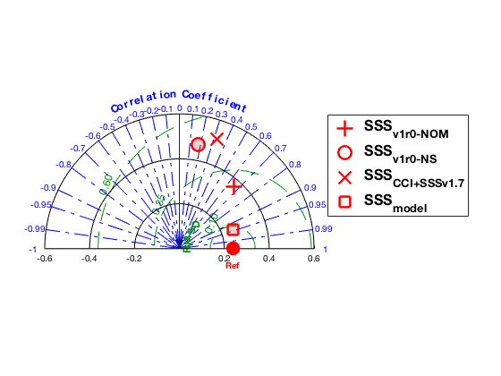

Contents
- set flag_str to notice filename
- set bin_str to notice in filename
- [1] Colocation Ref-2-Satellite (% Baltic_SDN_BEC_colocations.m)
- [1.1] Compute Monthly mean
- [2] PLOTS: REF Vs Satellite
- [2.1] Plot: in situ geolocation
- [2.1.1] Compute BINNED data (mean,median, std) - [bin of 1 x 1, ie. like in PIMEP]
- [2.1.1.1] PLOT Number of match-up in eah bin
- [2.1.1.2] PLOT MEAN in eah bin [Binned Mean]
- [2.1.1.2] PLOT MEDIAN in eah bin [Binned Median]
- [2.1.1.3] PLOT STD in eah bin [Binned Mean]
- [2.2] TIMESERIES: ALL-SSS
- [2.2.1] TIMESERIES: ALL-SSS MEAN at ALL-float location
- [2.2.2] TIMESERIES: ALL-SSS MEDIAN at ALL-float location
- [2.2.3] TIMESERIES: ALL-SSS STD at ALL location
- [2.2.4] TIMESERIES: Number of colocations dSSS
- [2.2.5] TIMESERIES: MEAN dSSS
- [2.2.6] TIMESERIES STD SSS
- [2.2.7] TIMESERIES MEDIAN dSSS
- [2.3] BOXPLOTS
- [2.3.1] boxplots: ALL SSS ref data versus ALL Satellite data
- [2.3.2] boxplots: ALL dSSS ref data versus ALL Satellite data
- [2.4] HISTOGRAMS
- [2.4.1] Histograms of SSS
- [2.4.1.1] Baltic+ Nominal Compute stats for SSS
- [2.4.1.2] Baltic+ Nodal Sampling Compute stats for SSS
- [2.4.1.3] CCI+SSS Compute stats for dSSS
- [2.4.1.4] Model Compute stats for SSS
- [2.4.1.5] write stats table
- [2.4.2] Histograms of dSSS
- [2.4.2.1] Baltic+ NOM Compute stats for dSSS
- [2.4.2.2] Baltic v2.0 Compute stats for dSSS
- [2.4.3] CCI+SSS Compute stats for dSSS
- [2.4.3] Model Compute stats for dSSS
- [2.4.2.5] write stats table
- [2.7] TAYLOR DIAGRAMS
- [2.2.1] SCATTERPLOTS: SSS Vs SSS-ref
- [2.2.1.1] Scatterplot SSS-Nominal [NM]
- [2.2.1.2] Scatterplot SSS-Nodal Sampling [NS]
- [2.2.1.3] Scatterplot SSS-CCI+SSS [CCI+SSS]
- [2.2.1.4] Scatterplot SSS-model [model]
% Syntax: Baltic_SDN_BEC_analyses.m (script) % % Description % Analyses of Ref data as provided by BEC. REF data was binnned (25x25 km) % to the closes satellite grid node (NEW). % % Input: matlab files created from the original netCDF files (use % ar_rd_BEC.m) % % Inputs % iregion: There are four Baltic+ study regions (see Baltic+ DUM, p. 28): % [1] Arkona Basin [ArB] (55°31'30.22"N, 16°16'15.06"E) % [2] Bothian Sea [BOS] (61°55'50.19"N, 19°14'46.24"E) % [3] Gulf of Finland [GOF] (59°35'55.07"N, 23°07'27.96"E) % [4] Northern Baltic Proper [NBP] (57°36'10.05"N, 19°48'25.78"E) % [5] ALL-Baltic [ALL] % % % This script compares Satellite data againts the Ref (in situ) data. % Furthermore, this script does compare Ref againts regional model data (NEMO). % The model data is used in the processing of the new Baltic+ SSS data set. % % This script does the following: % [1] Colocations Ref-2-satellite and Ref-2-Model grid/time [Baltic_SDN_colocations.m] % [2] Comparisons Ref Vs Satellite and Ref-2-Model % [3] Baltic Study [2011-2013]: % *[3.1] BOXPLOTS % ** [3.1.1] BOXPPLOT: SSS at float location (i.e. SSS-satellite and SSS-model) % *[3.2] PROFILES: Ref Profiles (T and S) -- study column structure % *[3.3] TIMESERIES % ** [3.3.1] SSS Timeseries at float location % ** [3.3.2] dSSS Timeseries at float location (dSSS = Ref - QD, QD: Query dataset) % % % Data source: % BEC products for validation % % % current version: v3r0 (2020/07/22) - Use binned ref data instead of % individual ref data % % % History % v2r2 (2020/03/05) - Update plots and do some debugging (e.g. taylor diagram) % v1r2 Change order of script by: % --> 1/ Make daily plots Ref and SSS-satellite; % --> 2/ Save daily plots (to study TOP surface melting ice Vs. SSS) % % v1r1 Creation of snipet (functions) to make Ref vertical interpolations % v1r0 Creation of this script [20191114] % % % ========================================================================= % Author: rcatany % % ========================================================================= warning('off','all') %clc; clear; close all % Get SSS-satellite data within a given distance from each Ref float r = 0; %25; % Radius distance platform (in Km) depth_ref = 10; % Reference depth (m), by gral. assumtion 10 m ibasin = 9; % Basin number: 7 (Arctic); 9 (Baltic) iregion = 4; % [5] ALL-BALTIC; see top of the script for other options iyear = 2011:2013; imonth = 1:12; flag_on = 1; % [flag_on= 1] apply flags as (qc = 49 "good value data"); or not [flag_on = 0] bin_data = 1; % [bin_data = 1] bin REF, or not [bin_data = 0] - (NEW 20200723, v3r0) REF_str = 'SDN'; %input the string of the reference dataset (eg. SDN, ARGO, TARA, etc.) % Define first and last year of timeseries (stings) year1_str = num2str(iyear(1)); year2_str = num2str(iyear(end)); % get basin limits [xmin,xmax,ymin,ymax, basin_str] = map_lim_raf(ibasin); % Colocatiion fn_out for each Regional study in the Baltic if strcmpi(iregion,'ARB') || iregion == 1% Arkona Basin region = 'ARB'; elseif strcmpi(iregion,'BOS') || iregion == 2 % Bothian Sea region = 'BOS'; elseif strcmpi(iregion,'GOF') || iregion == 3 % Gulf of Finland region = 'GOF'; elseif strcmpi(iregion,'NBP') || iregion == 4 % Gulf of Finland region = 'NBP'; elseif strcmpi(iregion,'ALL') || iregion == 5 % all-Baltic region stats region = 'ALL'; end % ===================================
set flag_str to notice filename
if flag_on == 1 flag_str = 'FLAG#49'; elseif flag_on == 0 flag_str = 'FLAG#NO'; end
set bin_str to notice in filename
if bin_data == 0 bin_str = 'NOBIN'; elseif bin_data == 1 bin_str = 'BINNED'; end % ================================== % Folders input/output fg_save = 1; % flag save figures [1]; or not [0]; fg_format = 'png'; path_root = ('/Volumes/Rogue/Data/'); folder_data = ([path_root ... 'SSS/' basin_str '/BEC/Validation/indata/SDN/']); % Make a log_file to record status of each ARGO-BEC file [2020/01/21] folder_log = ['/Volumes/Rogue/Data/SSS/' basin_str '/BEC/Validation/indata/']; fn_log = [folder_log 'SDN_MISSING_20200121.txt']; folder_figs = '/Volumes/Rogue/scratch/Validation/'; folder_colocations = [path_root... 'SSS/Baltic/BEC/Validation/indata/SDN/Colocations/' bin_str '/' flag_str '/cat_files/' ]; % ========================== folder_figs = [folder_figs basin_str... '/SDN/' bin_str '/' flag_str '/' region '/']; if fg_save == 1 foldercheck_raf(folder_figs); %! make folder_figs end
[1] Colocation Ref-2-Satellite (% Baltic_SDN_BEC_colocations.m)
run ([basin_str '_SDN_BEC_colocations.m'])% (snippet)
% Load colocations Ref to different satellites % [X1] Baltic Nominal version_col1 = 'v1r0_NOM'; fn_col1 = [folder_colocations version_col1 '/' region '/'... basin_str '_' region '_SDN_R' num2str(r)... '_10m_COLOCATIONS_' year1_str '_' year2_str... '_' version_col1 '_STATS' '.mat']; % [X2] Baltic Nodal sampling v1.0 version_col2 = 'v1r0_NS'; fn_col2 = [folder_colocations version_col2 '/' region '/'... basin_str '_' region '_SDN_R' num2str(r)... '_10m_COLOCATIONS_' year1_str '_' year2_str... '_' version_col2 '_STATS' '.mat']; % [X3] Baltic CCI+SSSv1.7 version_col3 = 'CCI+SSSv1.7'; fn_col3 = [folder_colocations version_col3 '/' region '/'... basin_str '_' region '_SDN_R' num2str(r)... '_10m_COLOCATIONS_' year1_str '_' year2_str... '_' version_col3 '_STATS' '.mat']; % [X4] Baltic Reanalysis (NEMO v003) version_col4 = 'REANALYSIS_PHY_003_011'; fn_col4 = [folder_colocations version_col4 '/' region '/'... basin_str '_' region '_SDN_R' num2str(r)... '_10m_COLOCATIONS_' year1_str '_' year2_str... '_' version_col4 '_STATS' '.mat']; X1 = load(fn_col1); X2 = load(fn_col2); X3 = load(fn_col3); X4 = load(fn_col4);
[1.1] Compute Monthly mean
Ideally use median instead of mean (ie. to keep statistical robustness)
% this piece of code could be implemented in the stats function % (validation_stats) itime1 = X1.time_irange; sss1 = nanmedian(X1.sss_irange,1); SALT_ref1 = X1.SALT_ref; version_str1 = X1.version_str; version_str1_legend = strrep(X1.version_str,'_','-'); itime2 = X2.time_irange; sss2 = nanmedian(X2.sss_irange,1); SALT_ref2 = X2.SALT_ref; version_str2 = X2.version_str; version_str2_legend = strrep(X2.version_str,'_','-'); itime3 = X3.time_irange; sss3 = nanmedian(X3.sss_irange,1); SALT_ref3 = X3.SALT_ref; version_str3 = X3.version_str; version_str3_legend = strrep(X3.version_str,'_','-'); itime4 = X4.time_irange; sss4 = nanmedian(X4.sss_irange,1); SALT_ref4 = X4.SALT_ref; version_str4 = X4.version_str; version_str4_legend = strrep(X4.version_str,'_','-'); version_str4_legend = strrep(X4.version_str,'REANALYSIS_PHY_003_011','model'); % ============= % remove data from outside the Baltic sea (outside Arkona basin): % lon <14 and lat > 66.5 % remove salinities lower than SSS_min SSS_min = 0; ind_1 = sss1<=SSS_min | (X1.lon_irange < 14) & (X1.lat_irange > 66.5); ind_2 = sss2<=SSS_min | (X2.lon_irange < 14) & (X2.lat_irange > 66.5); ind_3 = sss3<=SSS_min | (X3.lon_irange < 14) & (X3.lat_irange > 66.5); ind_4 = sss4<=SSS_min | (X4.lon_irange < 14) & (X4.lat_irange > 66.5); sss1(ind_1) = NaN; sss2(ind_2) = NaN; sss3(ind_3) = NaN; sss4(ind_4) = NaN; clear ind_* % =========================== % remove 'time' with no data (i.e. SSS) ind_1 = isnan(sss1); ind_2 = isnan(sss2); ind_3 = isnan(sss3); ind_4 = isnan(sss4); itime1(ind_1) = NaN; itime2(ind_2) = NaN; itime3(ind_3) = NaN; itime4(ind_4) = NaN; clear ind_* % ===== itime_date1 = datevec(itime1'); itime_date2 = datevec(itime2'); itime_date3 = datevec(itime3'); itime_date4 = datevec(itime4'); % ==================== % set the limits of the timeseries (ie. it is the same for all dataseries) % compute the time min/max from all products (time*_alfa are temporary % variables time_alfa = [itime1 itime2 itime3 itime4]; time_min_alfa = min (time_alfa); time_max_alfa = max (time_alfa); time_min_alfa = datevec(time_min_alfa); time_max_alfa = datevec(time_max_alfa); year_min = time_min_alfa(1); year_max = time_max_alfa(1); month_min = time_min_alfa(2); month_max = time_max_alfa(2); clear *_alfa % ==================== years = year_min:year_max; months = month_min:month_max; time_start = datenum(year_min,month_min,1,0,0,0); time_end = datenum(year_max,month_max,1,0,0,0); Nyears = length(years); Nmonths = length(months); TT = nan([1,Nyears*Nmonths]); ncoloc_monthly1 = TT; sss_monthly_mean1 = TT; sss_monthly_median1 = TT; sss_monthly_std1 = TT; SALT_ref_monthly_mean1 = TT; SALT_ref_monthly_median1 = TT; SALT_ref_monthly_std1 = TT; ncoloc_monthly2 = TT; sss_monthly_mean2 = TT; sss_monthly_median2 = TT; sss_monthly_std2 = TT; SALT_ref_monthly_mean2 = TT; SALT_ref_monthly_median2 = TT; SALT_ref_monthly_std2 = TT; ncoloc_monthly3 = TT; sss_monthly_mean3 = TT; sss_monthly_median3 = TT; sss_monthly_std3 = TT; SALT_ref_monthly_mean3 = TT; SALT_ref_monthly_median3 = TT; SALT_ref_monthly_std3 = TT; ncoloc_monthly4 = TT; sss_monthly_mean4 = TT; sss_monthly_median4 = TT; sss_monthly_std4 = TT; SALT_ref_monthly_mean4 = TT; SALT_ref_monthly_median4 = TT; SALT_ref_monthly_std4 = TT; ncount = 0; % reset loop counter for yy = 1:Nyears for mm = 1:Nmonths ncount = ncount+1; ind1 = itime_date1(:,1) == years(yy) & itime_date1(:,2) == months(mm); ind2 = itime_date2(:,1) == years(yy) & itime_date2(:,2) == months(mm); ind3 = itime_date3(:,1) == years(yy) & itime_date3(:,2) == months(mm); ind4 = itime_date4(:,1) == years(yy) & itime_date4(:,2) == months(mm); ncoloc_monthly1(ncount) = sum(ind1); sss_monthly_mean1(ncount) = nanmean(sss1(ind1)); sss_monthly_median1(ncount) = nanmedian(sss1(ind1)); sss_monthly_std1(ncount) = nanstd(sss1(ind1)); SALT_ref_monthly_mean1(ncount) = nanmean(SALT_ref1(ind1)); SALT_ref_monthly_median1(ncount) = nanmedian(SALT_ref1(ind1)); SALT_ref_monthly_std1(ncount) = nanstd(SALT_ref1(ind1)); ncoloc_monthly2(ncount) = sum(ind2); sss_monthly_mean2(ncount) = nanmean(sss2(ind2)); sss_monthly_median2(ncount) = nanmedian(sss2(ind2)); sss_monthly_std2(ncount) = nanstd(sss2(ind2)); SALT_ref_monthly_mean2(ncount) = nanmean(SALT_ref2(ind2)); SALT_ref_monthly_median2(ncount) = nanmedian(SALT_ref2(ind2)); SALT_ref_monthly_std2(ncount) = nanstd(SALT_ref2(ind2)); ncoloc_monthly3(ncount) = sum(ind3); sss_monthly_mean3(ncount) = nanmean(sss3(ind3)); sss_monthly_median3(ncount) = nanmedian(sss3(ind3)); sss_monthly_std3(ncount) = nanstd(sss3(ind3)); SALT_ref_monthly_mean3(ncount) = nanmean(SALT_ref3(ind3)); SALT_ref_monthly_median3(ncount) = nanmedian(SALT_ref3(ind3)); SALT_ref_monthly_std3(ncount) = nanstd(SALT_ref3(ind3)); ncoloc_monthly4(ncount) = sum(ind4); sss_monthly_mean4(ncount) = nanmean(sss4(ind4)); sss_monthly_median4(ncount) = nanmedian(sss4(ind4)); sss_monthly_std4(ncount) = nanstd(sss4(ind4)); SALT_ref_monthly_mean4(ncount) = nanmean(SALT_ref4(ind4)); SALT_ref_monthly_median4(ncount) = nanmedian(SALT_ref4(ind4)); SALT_ref_monthly_std4(ncount) = nanstd(SALT_ref4(ind4)); clear ind* end end dsss_monthly_mean1 = sss_monthly_mean1 - SALT_ref_monthly_mean1; dsss_monthly_mean2 = sss_monthly_mean2 - SALT_ref_monthly_mean2; dsss_monthly_mean3 = sss_monthly_mean3 - SALT_ref_monthly_mean3; dsss_monthly_mean4 = sss_monthly_mean4 - SALT_ref_monthly_mean4; dsss_monthly_std1 = sss_monthly_std1 - SALT_ref_monthly_std1; dsss_monthly_std2 = sss_monthly_std2 - SALT_ref_monthly_std2; dsss_monthly_std3 = sss_monthly_std3 - SALT_ref_monthly_std3; dsss_monthly_std4 = sss_monthly_std4 - SALT_ref_monthly_std4; dsss_monthly_median1 = sss_monthly_median1 - SALT_ref_monthly_median1; dsss_monthly_median2 = sss_monthly_median2 - SALT_ref_monthly_median2; dsss_monthly_median3 = sss_monthly_median3 - SALT_ref_monthly_median3; dsss_monthly_median4 = sss_monthly_median4 - SALT_ref_monthly_median4;
[2] PLOTS: REF Vs Satellite
[2.1] Plot: in situ geolocation
Plots in one map locations of same platform
make_plot = 1; % flag to make plot [1], or not [0] if make_plot == 1 % snippet to plot map and zoom-in to Ref location baltic_plot_SDN_map_BEC end
[2.1.1] Compute BINNED data (mean,median, std) - [bin of 1 x 1, ie. like in PIMEP]
var_in = X1.SALT_ref; lon_in = X1.lon_irange; lat_in = X1.lat_irange; % remove data from outside the Baltic sea (outside Arkona basin) lon_in(lon_in < 14) = NaN; lat_in(lat_in > 66.5) = NaN; bin_sz = 1; % bin size in degrees [TT] = bindata_raf(ibasin,bin_sz,lon_in,lat_in,var_in); bin_sz_str = num2str(bin_sz); lon_bin = TT.lon_bin_center; lat_bin = TT.lat_bin_center; count_bin = TT.count_bin;%./length(iyear); %number obs per year SALT_ref1_bin_mean = TT.mean_bin; SALT_ref1_bin_median = TT.median_bin; SALT_ref1_bin_std = TT.std_bin;
[2.1.1.1] PLOT Number of match-up in eah bin
Z_BIN = count_bin; cmin = 1; cmax = 200; % set zero counts to NaN (to improve the pcolor plot) ind = Z_BIN == 0; Z_BIN(ind) = NaN; time_line = linspace(time_start,time_end,ncount); time_str1 = datestr(time_line(1),'yyyymmdd'); time_str2 = datestr(time_line(end),'yyyymmdd'); % make pcolor map figure; fillmap_baltic; hold on pcolorm(lat_bin,lon_bin,Z_BIN); shading flat; fillmap_baltic; colormap(jet) ch = colorbar; ylabel(ch,'number match ups','fontsize',18) %caxis ([cmin cmax]); title({... ['Number of match ups in ' ... bin_sz_str ' x ' bin_sz_str... ' boxes ' basin_str ' (region ' region ') '];... [time_str1 '-' time_str2] ['Distance: ' num2str(r) ' km']}); fg_name = ['SDN_'... time_str1 '_' time_str2... '_BINNED_COUNTS_' region '_R' num2str(r) 'KM.' fg_format]; % Save figure - output - folder_this = [folder_figs 'BINNED/COUNTS/']; if fg_save == 1 foldercheck_raf(folder_this); %! make folder_figs end fg_name = [folder_this fg_name]; % check fn existence fg_exist = exist(fg_name,'file'); if fg_save == 1 && fg_exist == 0 save_raf(gcf,fg_name,fg_format); close end
[2.1.1.2] PLOT MEAN in eah bin [Binned Mean]
Z_BIN = SALT_ref1_bin_mean; cmin = 0; cmax = 15; % set zero counts to NaN (to improve the pcolor plot) ind = (Z_BIN == 0 | count_bin == 0); Z_BIN(ind) = NaN; time_line = linspace(time_start,time_end,ncount); time_str1 = datestr(time_line(1),'yyyymmdd'); time_str2 = datestr(time_line(end),'yyyymmdd'); % make pcolor map figure; fillmap_baltic; hold on pcolorm(lat_bin,lon_bin,Z_BIN); shading flat; fillmap_baltic; colormap(jet) caxis([cmin cmax]) box on grid on ch = colorbar; ylabel(ch,'SSS','fontsize',18) % caxis ([cmin cmax]); title({... ['Binned mean in ' ... bin_sz_str ' x ' bin_sz_str... ' boxes ' basin_str ' (region ' region ') '];... [time_str1 '-' time_str2] ['Distance: ' num2str(r) ' km']}); fg_name = ['SDN_'... time_str1 '_' time_str2... '_BINNED_MEAN_' region '_R' num2str(r) 'KM.' fg_format]; % Save figure - output - folder_this = [folder_figs 'BINNED/COUNTS/']; if fg_save == 1 foldercheck_raf(folder_this); %! make folder_figs end fg_name = [folder_this fg_name]; % check fn existence fg_exist = exist(fg_name,'file'); if fg_save == 1 && fg_exist == 0 save_raf(gcf,fg_name,fg_format); close end
[2.1.1.2] PLOT MEDIAN in eah bin [Binned Median]
Z_BIN = SALT_ref1_bin_median; cmin = 0; cmax = 15; % set zero counts to NaN (to improve the pcolor plot) ind = (Z_BIN == 0 | count_bin == 0); Z_BIN(ind) = NaN; time_line = linspace(time_start,time_end,ncount); time_str1 = datestr(time_line(1),'yyyymmdd'); time_str2 = datestr(time_line(end),'yyyymmdd'); % make pcolor map figure; fillmap_baltic; hold on pcolorm(lat_bin,lon_bin,Z_BIN); shading flat; fillmap_baltic; colormap(jet) caxis([cmin cmax]) box on grid on ch = colorbar; ylabel(ch,'SSS','fontsize',18) % caxis ([cmin cmax]); title({... ['Binned median in ' ... bin_sz_str ' x ' bin_sz_str... ' boxes ' basin_str ' (region ' region ') '];... [time_str1 '-' time_str2] ['Distance: ' num2str(r) ' km']}); fg_name = ['SDN_'... time_str1 '_' time_str2... '_BINNED_MEDIAN_' region '_R' num2str(r) 'KM.' fg_format]; % Save figure - output - folder_this = [folder_figs 'BINNED/COUNTS/']; if fg_save == 1 foldercheck_raf(folder_this); %! make folder_figs end fg_name = [folder_this fg_name]; % check fn existence fg_exist = exist(fg_name,'file'); if fg_save == 1 && fg_exist == 0 save_raf(gcf,fg_name,fg_format); close end
[2.1.1.3] PLOT STD in eah bin [Binned Mean]
Z_BIN = SALT_ref1_bin_std; cmin = 0; cmax = 1; % set zero counts to NaN (to improve the pcolor plot) ind = (Z_BIN == 0 | count_bin == 0); Z_BIN(ind) = NaN; time_line = linspace(time_start,time_end,ncount); time_str1 = datestr(time_line(1),'yyyymmdd'); time_str2 = datestr(time_line(end),'yyyymmdd'); % make pcolor map figure; fillmap_baltic; hold on pcolorm(lat_bin,lon_bin,Z_BIN); shading flat; fillmap_baltic; colormap(jet) caxis([cmin cmax]) box on grid on ch = colorbar; ylabel(ch,'std SSS','fontsize',18) % caxis ([cmin cmax]); title({... ['Binned STD in ' ... bin_sz_str ' x ' bin_sz_str... ' boxes ' basin_str ' (region ' region ') '];... [time_str1 '-' time_str2] ['Distance: ' num2str(r) ' km']}); fg_name = ['SDN_'... time_str1 '_' time_str2... '_BINNED_STD_' region '_R' num2str(r) 'KM.' fg_format]; % Save figure - output - folder_this = [folder_figs 'BINNED/COUNTS/']; if fg_save == 1 foldercheck_raf(folder_this); %! make folder_figs end fg_name = [folder_this fg_name]; % check fn existence fg_exist = exist(fg_name,'file'); if fg_save == 1 && fg_exist == 0 save_raf(gcf,fg_name,fg_format); close end
[2.2] TIMESERIES: ALL-SSS
[2.2.1] TIMESERIES: ALL-SSS MEAN at ALL-float location
Compare each product to Salinity ref [0-10 m] average
Smin = 0; Smax = 10; % string product name PRODS = {... [' ' version_str1_legend],[' ' version_str2_legend],... [' ' version_str3_legend],[' ' version_str4_legend],... ' ref'}; make_plot = 1; if make_plot == 1 % Get more colors: type 'uisetcolor' color_lines = [... 0 0.4471 0.7412;... 0.9294 0.6941 0.1255;... 0.3922 0.8314 0.0745;... 0.7176 0.2745 1.0000;... 0.9294 0.6941 0.1255;... 1.0000 0.0745 0.6510]; time_line = linspace(time_start,time_end,ncount); time_str1 = datestr(time_line(1),'yyyymmdd'); time_str2 = datestr(time_line(end),'yyyymmdd'); Y_beta1 = sss_monthly_mean1; Y_beta2 = sss_monthly_mean2; Y_beta3 = sss_monthly_mean3; Y_beta4 = sss_monthly_mean4; Y_beta5 = SALT_ref_monthly_mean1; Y_beta1 (Y_beta1 == 0) = NaN; Y_beta2 (Y_beta2 == 0) = NaN; Y_beta3 (Y_beta3 == 0) = NaN; Y_beta4 (Y_beta4 == 0) = NaN; Y_beta5 (Y_beta5 == 0) = NaN; Y_beta1 (Y_beta1 > Smax) = NaN; Y_beta2 (Y_beta2 > Smax) = NaN; Y_beta3 (Y_beta3 > Smax) = NaN; Y_beta4 (Y_beta4 > Smax) = NaN; Y_beta5 (Y_beta5 > Smax) = NaN; % ========================== figure hold on linewidth_num = 4; h1 = plot(time_line,Y_beta1,'o-','linewidth',linewidth_num,'color',color_lines(1,:),'markersize',20); hold on h2 = plot(time_line,Y_beta2,'d-','linewidth',linewidth_num,'color',color_lines(2,:),'markersize',10); hold on h3 = plot(time_line,Y_beta3,'p-','linewidth',linewidth_num,'color',color_lines(3,:),'markersize',10); hold on h4 = plot(time_line,Y_beta4,'s-','linewidth',linewidth_num,'color',color_lines(4,:)); hold on h5 = plot(time_line,Y_beta5,'o-','linewidth',2,'color','r'); % ref xlabel ('Time (years)','fontsize',24) ylabel ('SSS (psu)','fontsize',24) grid on grid minor box on % set yaxis limits axis tight ylim([Smin Smax]) h = findobj(gca, 'type', 'text'); set(h,'VerticalAlignment', 'middle'); set(gca,'FontSize',25); set(gca,'linew',2) % number of xtick if length(iyear) == 1 Ndays = 15; elseif length(iyear) > 1 Ndays = 120; end time_line2 = time_line(1):Ndays:time_line(end); xticks(time_line2) xticklabels(datestr(time_line2,'mm-yyyy')) xtickangle(45) lg = legend([h1,h2,h3,h4,h5],PRODS,... 'fontsize',18,'location','Southwest'); title({... [basin_str ' (region ' region ') '... 'Satellite SSS around Salinity reference (in situ) '];... [time_str1 '-' time_str2] ['Distance: ' num2str(r) ' km']}); fg_name = ['SDN_'... datestr(time_line(1),'yyyymmdd') '_'... datestr(time_line(end),'yyyymmdd') '_TIMESERIES_SSS_'... region '_R' num2str(r) 'KM.' fg_format]; % Save figure - output - folder_this = [folder_figs 'TIMESERIES/SSS/MEAN/']; if fg_save == 1 foldercheck_raf(folder_this); %! make folder_figs end fg_name = [folder_this fg_name]; % check fn existence fg_exist = exist(fg_name,'file'); if fg_save == 1 && fg_exist == 0 save_raf(gcf,fg_name,fg_format); close end end
[2.2.2] TIMESERIES: ALL-SSS MEDIAN at ALL-float location
Compare each product to Salinity ref [0-10 m] average
% string product name PRODS = {... [' ' version_str1_legend],[' ' version_str2_legend],... [' ' version_str3_legend],[' ' version_str4_legend],... ' ref'}; make_plot = 1; if make_plot == 1 % Get more colors: type 'uisetcolor' color_lines = [... 0 0.4471 0.7412;... 0.9294 0.6941 0.1255;... 0.3922 0.8314 0.0745;... 0.7176 0.2745 1.0000;... 0.9294 0.6941 0.1255;... 1.0000 0.0745 0.6510]; time_line = linspace(time_start,time_end,ncount); time_str1 = datestr(time_line(1),'yyyymmdd'); time_str2 = datestr(time_line(end),'yyyymmdd'); Y_beta1 = sss_monthly_median1; Y_beta2 = sss_monthly_median2; Y_beta3 = sss_monthly_median3; Y_beta4 = sss_monthly_median4; Y_beta5 = SALT_ref_monthly_median1; Y_beta1 (Y_beta1 == 0) = NaN; Y_beta2 (Y_beta2 == 0) = NaN; Y_beta3 (Y_beta3 == 0) = NaN; Y_beta4 (Y_beta4 == 0) = NaN; Y_beta5 (Y_beta5 == 0) = NaN; Y_beta1 (Y_beta1 > Smax) = NaN; Y_beta2 (Y_beta2 > Smax) = NaN; Y_beta3 (Y_beta3 > Smax) = NaN; Y_beta4 (Y_beta4 > Smax) = NaN; Y_beta5 (Y_beta5 > Smax) = NaN; % ========================== figure hold on linewidth_num = 4; h1 = plot(time_line,Y_beta1,'o-','linewidth',linewidth_num,'color',color_lines(1,:),'markersize',20); hold on h2 = plot(time_line,Y_beta2,'d-','linewidth',linewidth_num,'color',color_lines(2,:),'markersize',10); hold on h3 = plot(time_line,Y_beta3,'p-','linewidth',linewidth_num,'color',color_lines(3,:),'markersize',10); hold on h4 = plot(time_line,Y_beta4,'s-','linewidth',linewidth_num,'color',color_lines(4,:)); hold on h5 = plot(time_line,Y_beta5,'o-','linewidth',2,'color','r'); % ref xlabel ('Time (years)','fontsize',24) ylabel ('SSS (psu)','fontsize',24) grid on grid minor box on % Set y-axis limit axis tight ylim([Smin Smax]) h = findobj(gca, 'type', 'text'); set(h,'VerticalAlignment', 'middle'); set(gca,'FontSize',25); set(gca,'linew',2) % number of xtick if length(iyear) == 1 Ndays = 15; elseif length(iyear) > 1 Ndays = 120; end time_line2 = time_line(1):Ndays:time_line(end); xticks(time_line2) xticklabels(datestr(time_line2,'mm-yyyy')) xtickangle(45) lg = legend([h1,h2,h3,h4,h5],PRODS,... 'fontsize',18,'location','Southwest'); title({... [basin_str ' (region ' region ') '... 'Satellite SSS around Salinity reference (in situ) '];... [time_str1 '-' time_str2] ['Distance: ' num2str(r) ' km']}); fg_name = ['SDN_'... datestr(time_line(1),'yyyymmdd') '_'... datestr(time_line(end),'yyyymmdd') '_TIMESERIES_SSS_'... region '_R' num2str(r) 'KM.' fg_format]; % Save figure - output - folder_this = [folder_figs 'TIMESERIES/SSS/MEDIAN/']; if fg_save == 1 foldercheck_raf(folder_this); %! make folder_figs end fg_name = [folder_this fg_name]; % check fn existence fg_exist = exist(fg_name,'file'); if fg_save == 1 && fg_exist == 0 save_raf(gcf,fg_name,fg_format); close end end
[2.2.3] TIMESERIES: ALL-SSS STD at ALL location
Compare each product to Salinity Ref 10-m and to Ref [0-10m] average
% string product name PRODS = {... [' ' version_str1_legend],[' ' version_str2_legend],... [' ' version_str3_legend],[' ' version_str4_legend],... ' ref'}; make_plot = 1; if make_plot == 1 % Get more colors: type 'uisetcolor' color_lines = [... 0 0.4471 0.7412;... 0.9294 0.6941 0.1255;... 0.3922 0.8314 0.0745;... 0.7176 0.2745 1.0000;... 0.9294 0.6941 0.1255;... 1.0000 0.0745 0.6510]; time_line = linspace(time_start,time_end,ncount); time_str1 = datestr(time_line(1),'yyyymmdd'); time_str2 = datestr(time_line(end),'yyyymmdd'); Y_beta1 = sss_monthly_std1; Y_beta2 = sss_monthly_std2; Y_beta3 = sss_monthly_std3; Y_beta4 = sss_monthly_std4; Y_beta5 = SALT_ref_monthly_std1; Y_beta1 (Y_beta1 == 0) = NaN; Y_beta2 (Y_beta2 == 0) = NaN; Y_beta3 (Y_beta3 == 0) = NaN; Y_beta4 (Y_beta4 == 0) = NaN; Y_beta5 (Y_beta5 == 0) = NaN; % ========================== figure hold on linewidth_num = 4; h1 = plot(time_line,Y_beta1,'o-','linewidth',linewidth_num,'color',color_lines(1,:),'markersize',20); hold on h2 = plot(time_line,Y_beta2,'d-','linewidth',linewidth_num,'color',color_lines(2,:),'markersize',10); hold on h3 = plot(time_line,Y_beta3,'p-','linewidth',linewidth_num,'color',color_lines(3,:),'markersize',10); hold on h4 = plot(time_line,Y_beta4,'s-','linewidth',linewidth_num,'color',color_lines(4,:)); hold on h5 = plot(time_line,Y_beta5,'o-','linewidth',2,'color','r'); % ref axis tight ylim([0 4]); xlabel ('Time (years)','fontsize',24) ylabel ('STD SSS (psu)','fontsize',24) grid on grid minor box on h = findobj(gca, 'type', 'text'); set(h,'VerticalAlignment', 'middle'); set(gca,'FontSize',25); set(gca,'linew',2) % number of xtick if length(iyear) == 1 Ndays = 15; elseif length(iyear) > 1 Ndays = 120; end time_line2 = time_line(1):Ndays:time_line(end); xticks(time_line2) xticklabels(datestr(time_line2,'dd-mm-yyyy')) xtickangle(45) lg = legend([h1,h2,h3,h4,h5],PRODS,... 'fontsize',18,'location','NorthEast'); title({... [basin_str ' (region ' region ') '... 'Satellite STD SSS around Salinity reference (in situ) '];... [time_str1 '-' time_str2] ['Distance: ' num2str(r) ' km']}); fg_name = ['SDN_'... datestr(time_line(1),'yyyymmdd') '_'... datestr(time_line(end),'yyyymmdd') '_TIMESERIES_STD_SSS_'... region '_R' num2str(r) 'KM.' fg_format]; % Save figure - output - folder_this = [folder_figs 'TIMESERIES/SSS/STD/']; if fg_save == 1 foldercheck_raf(folder_this); %! make folder_figs end fg_name = [folder_this fg_name]; % check fn existence fg_exist = exist(fg_name,'file'); if fg_save == 1 && fg_exist == 0 save_raf(gcf,fg_name,fg_format); close end end
[2.2.4] TIMESERIES: Number of colocations dSSS
Y_beta1 = ncoloc_monthly1; Y_beta2 = ncoloc_monthly2; Y_beta3 = ncoloc_monthly3; Y_beta4 = ncoloc_monthly4; % Y_beta1 (Y_beta1 < std(ncoloc_monthly1)) = NaN; % Y_beta2 (Y_beta2 < std(ncoloc_monthly2)) = NaN; % Y_beta3 (Y_beta3 < std(ncoloc_monthly3)) = NaN; % Y_beta4 (Y_beta4 < std(ncoloc_monthly4)) = NaN; ncoloc1_total = sum(ncoloc_monthly1); ncoloc2_total = sum(ncoloc_monthly2); ncoloc3_total = sum(ncoloc_monthly3); ncoloc4_total = sum(ncoloc_monthly4); ncoloc_max = max([max(Y_beta1) max(Y_beta2) max(Y_beta3) max(Y_beta4)]); % set the timeseries line time_line = linspace(time_start,time_end,ncount); time_str1 = datestr(time_line(1),'yyyymmdd'); time_str2 = datestr(time_line(end),'yyyymmdd'); % string product name PRODS = {... [' ' version_str1_legend],[' ' version_str2_legend],... [' ' version_str3_legend],[' ' version_str4_legend]}; X = X1.time_irange; linewidth_num = 4; figure (25); clf; hold on h1 = plot(time_line,Y_beta1,'o-','linewidth',linewidth_num,'color',color_lines(1,:),'markersize',20); hold on h2 = plot(time_line,Y_beta2,'d-','linewidth',linewidth_num,'color',color_lines(2,:),'markersize',10); hold on h3 = plot(time_line,Y_beta3,'p-','linewidth',linewidth_num,'color',color_lines(3,:),'markersize',10); hold on h4 = plot(time_line,Y_beta4,'s-','linewidth',linewidth_num,'color',color_lines(4,:)); hold on lg = legend([h1,h2,h3,h4],PRODS,... 'fontsize',18,'location','Northeast'); % set ylim depending if plot ALL or regional colocations axis tight obs_min = 0; obs_max = ncoloc_max; ylim([obs_min obs_max*1.20]) % if iregion ~= 5 % regional colocations % ylim([obs_min obs_max]./2) % % elseif iregion == 5 % ALL colocations % ylim([obs_min obs_max]) % end grid on grid minor box on h = findobj(gca, 'type', 'text'); set(h,'VerticalAlignment', 'middle'); set(gca,'FontSize',25); set(gca,'linew',2) % % tick font size % set(gca,'FontSize',20) % number of xtick if length(iyear) == 1 Ndays = 15; elseif length(iyear) > 1 Ndays = 120; end time_line2 = time_line(1):Ndays:time_line(end); xticks(time_line2) xticklabels(datestr(time_line2,'mm-yyyy')) xtickangle(45) xlabel ('Time (months)','fontsize',24) ylabel ('Number Colocations ','fontsize',24) title({['Colocation numbers of Salinity Satellite minus reference (in situ) '];... [basin_str ' (region ' region ')'];... [datestr(time_line(1),'yyyymmdd') '-' datestr(time_line(end),'yyyymmdd')]}) % Save figure - output - fg_name = ['SDN_'... datestr(time_line(1),'yyyymmdd') '_'... datestr(time_line(end),'yyyymmdd') '_TIMESERIES_dSSS_NCOLOC_'... region '_R' num2str(r) 'KM.' fg_format]; % Save figure - output - folder_this = [folder_figs 'TIMESERIES/NCOLOC/']; if fg_save == 1 foldercheck_raf(folder_this); %! make folder_figs end fg_name = [folder_this fg_name]; % check fn existence fg_exist = exist(fg_name,'file'); if fg_save == 1 && fg_exist == 0 save_raf(gcf,fg_name,fg_format); close end
[2.2.5] TIMESERIES: MEAN dSSS
Y_beta1 = dsss_monthly_mean1; Y_beta2 = dsss_monthly_mean2; Y_beta3 = dsss_monthly_mean3; Y_beta4 = dsss_monthly_mean4; % Get more colors: type 'uisetcolor' color_lines = [... 0 0.4471 0.7412;... 0.9294 0.6941 0.1255;... 0.3922 0.8314 0.0745;... 0.7176 0.2745 1.0000;... 0.9294 0.6941 0.1255;... 1.0000 0.0745 0.6510]; % set the timeseries line time_line = linspace(time_start,time_end,ncount); time_str1 = datestr(time_line(1),'yyyymmdd'); time_str2 = datestr(time_line(end),'yyyymmdd'); PRODS = {... [' ' version_str1_legend],[' ' version_str2_legend],... [' ' version_str3_legend],[' ' version_str4_legend]}; X = X1.time_irange; linewidth_num = 4; figure (25); clf; hold on h1 = plot(time_line,Y_beta1,'o-','linewidth',linewidth_num,'color',color_lines(1,:),'markersize',20); hold on h2 = plot(time_line,Y_beta2,'d-','linewidth',linewidth_num,'color',color_lines(2,:),'markersize',10); hold on h3 = plot(time_line,Y_beta3,'p-','linewidth',linewidth_num,'color',color_lines(3,:),'markersize',10); hold on h4 = plot(time_line,Y_beta4,'s-','linewidth',linewidth_num,'color',color_lines(4,:)); hold on plot([time_line(1) time_line(end)], [0 0],'k--','linewidth',2); lg = legend([h1,h2,h3,h4],PRODS{:},... 'fontsize',18,'location','SouthEast'); axis tight ylim([-1 1].*5) grid on grid minor box on h = findobj(gca, 'type', 'text'); set(h,'VerticalAlignment', 'middle'); set(gca,'FontSize',25); set(gca,'linew',2) % % change tick font size % set(gca,'FontSize',20) % number of xtick if length(iyear) == 1 Ndays = 15; elseif length(iyear) > 1 Ndays = 120; end time_line2 = time_line(1):Ndays:time_line(end); xticks(time_line2) xticklabels(datestr(time_line2,'mm-yyyy')) xtickangle(45) xlabel ('Time (months)','fontsize',24) ylabel ('dSSS [psu]','fontsize',24) title({['Mean Salinity Satellite minus reference (in situ) '];... [basin_str ' (region ' region ')'];... [datestr(time_line(1),'yyyymmdd') '-' datestr(time_line(end),'yyyymmdd')]}) % Save figure - output - fg_name = ['SDN_'... datestr(time_line(1),'yyyymmdd') '_'.... datestr(time_line(end),'yyyymmdd') '_TIMESERIES_dSSS_MEAN_'... region '_R' num2str(r) 'KM.' fg_format]; % Save figure - output - folder_this = [folder_figs 'TIMESERIES/dSSS/MEAN/']; if fg_save == 1 foldercheck_raf(folder_this); %! make folder_figs end fg_name = [folder_this fg_name]; % check fn existence fg_exist = exist(fg_name,'file'); if fg_save == 1 && fg_exist == 0 save_raf(gcf,fg_name,fg_format); close end
[2.2.6] TIMESERIES STD SSS
-BUG to fix (desc: not sure if bug, but time series of different product are too similar to each other)
make_plot = 1; if make_plot == 1 Y_beta1 = dsss_monthly_std1; Y_beta2 = dsss_monthly_std2; Y_beta3 = dsss_monthly_std3; Y_beta4 = dsss_monthly_std4; % set the timeseries line time_line = linspace(time_start,time_end,ncount); time_str1 = datestr(time_line(1),'yyyymmdd'); time_str2 = datestr(time_line(end),'yyyymmdd'); PRODS = {... [' ' version_str1_legend],[' ' version_str2_legend],... [' ' version_str3_legend],[' ' version_str4_legend]}; X = X1.time_irange; figure (25); clf; hold on linewidth_num = 4; figure (25); clf; hold on h1 = plot(time_line,Y_beta1,'-','linewidth',linewidth_num,'color',color_lines(1,:));hold on h2 = plot(time_line,Y_beta2,'-','linewidth',linewidth_num,'color',color_lines(2,:));hold on h3 = plot(time_line,Y_beta3,'-','linewidth',linewidth_num,'color',color_lines(3,:));hold on h4 = plot(time_line,Y_beta4,'-','linewidth',linewidth_num,'color',color_lines(4,:));hold on plot([time_line(1) time_line(end)], [0 0],'k--','linewidth',2); lg = legend([h1,h2,h3,h4],PRODS{:},... 'fontsize',18,'location','NorthEast'); axis tight ylim([-1 1].*4) grid on grid minor box on h = findobj(gca, 'type', 'text'); set(h,'VerticalAlignment', 'middle'); set(gca,'FontSize',25); set(gca,'linew',2) % % change tick font size % set(gca,'FontSize',20) % number of xtick if length(iyear) == 1 Ndays = 15; elseif length(iyear) > 1 Ndays = 120; end time_line2 = time_line(1):Ndays:time_line(end); xticks(time_line2) xticklabels(datestr(time_line2,'dd-mm-yyyy')) xtickangle(45) xlabel ('Time (months)','fontsize',24) ylabel ('STD dSSS [psu]','fontsize',24) title({['Salinity Satellite minus Ref (10 m) '];... [basin_str ' (region ' region ')'];... [datestr(time_line(1),'yyyymmdd') '-' datestr(time_line(end),'yyyymmdd')]}) % Save figure - output - fg_name = ['SDN_'... datestr(time_line(1),'yyyymmdd') '_'.... datestr(time_line(end),'yyyymmdd') '_TIMESERIES_dSSS_STD_'... region '_R' num2str(r) 'KM.' fg_format]; % Save figure - output - folder_this = [folder_figs 'TIMESERIES/dSSS/STD/']; if fg_save == 1 foldercheck_raf(folder_this); %! make folder_figs end fg_name = [folder_this fg_name]; % check fn existence fg_exist = exist(fg_name,'file'); if fg_save == 1 && fg_exist == 0 save_raf(gcf,fg_name,fg_format); close end end
[2.2.7] TIMESERIES MEDIAN dSSS
Y_beta1 = dsss_monthly_median1; Y_beta2 = dsss_monthly_median2; Y_beta3 = dsss_monthly_median3; Y_beta4 = dsss_monthly_median4; % set the timeseries line time_line = linspace(time_start,time_end,ncount); time_str1 = datestr(time_line(1),'yyyymmdd'); time_str2 = datestr(time_line(end),'yyyymmdd'); PRODS = {... [' ' version_str1_legend],[' ' version_str2_legend],... [' ' version_str3_legend],[' ' version_str4_legend]}; X = X1.time_irange; linewidth_num = 4; figure (25); clf; hold on h1 = plot(time_line,Y_beta1,'o-','linewidth',linewidth_num,'color',color_lines(1,:),'markersize',20); hold on h2 = plot(time_line,Y_beta2,'d-','linewidth',linewidth_num,'color',color_lines(2,:),'markersize',10); hold on h3 = plot(time_line,Y_beta3,'p-','linewidth',linewidth_num,'color',color_lines(3,:),'markersize',10); hold on h4 = plot(time_line,Y_beta4,'s-','linewidth',linewidth_num,'color',color_lines(4,:)); hold on plot([time_line(1) time_line(end)], [0 0],'k--','linewidth',2); lg = legend([h1,h2,h3,h4],PRODS{:},... 'fontsize',18,'location','SouthWest'); axis tight ylim([-1 1].*5) grid on grid minor box on h = findobj(gca, 'type', 'text'); set(h,'VerticalAlignment', 'middle'); set(gca,'FontSize',25); set(gca,'linew',2) % % change tick font size % set(gca,'FontSize',20) % time_line2 = time_line(1):150:time_line(end); xticks(time_line2) xticklabels(datestr(time_line2,'mm-yyyy')) xtickangle(45) xlabel ('Time (months)','fontsize',24) ylabel ('dSSS [psu]','fontsize',24) title({['Median Salinity Satellite minus Ref (10 m) '];... [basin_str ' (region ' region ')'];... [datestr(time_line(1),'yyyymmdd') '-' datestr(time_line(end),'yyyymmdd')]}) % Save figure - output - fg_name = ['SDN_'... datestr(time_line(1),'yyyymmdd') '_'.... datestr(time_line(end),'yyyymmdd') '_TIMESERIES_dSSS_MEDIAN_'... region '_R' num2str(r) 'KM.' fg_format]; % Save figure - output - folder_this = [folder_figs 'TIMESERIES/dSSS/MEDIAN/']; if fg_save == 1 foldercheck_raf(folder_this); %! make folder_figs end fg_name = [folder_this fg_name]; % check fn existence fg_exist = exist(fg_name,'file'); if fg_save == 1 && fg_exist == 0 save_raf(gcf,fg_name,fg_format); close end
[2.3] BOXPLOTS
[2.3.1] boxplots: ALL SSS ref data versus ALL Satellite data
make_plot = 1; % flag to make plot [1], or not [0] if make_plot == 1 % string product name PRODS = {... [' ' version_str1_legend],[' ' version_str2_legend],... [' ' version_str3_legend],[' ' version_str4_legend]}; nprof1 = length(X1.lon_irange); nprof2 = length(X2.lon_irange); nprof3 = length(X3.lon_irange); nprof4 = length(X4.lon_irange); time_ar = X1.time_irange(:); ind = find(~isnan(time_ar)); time_str1 = datestr(time_ar(ind(1)),'yyyymmdd'); time_str2 = datestr(time_ar(ind(end)),'yyyymmdd'); % % %* Use 'raw' data (no averages) % % X1_beta = X1.sss_irange(:); % % X2_beta = X2.sss_irange(:); % % X3_beta = X3.sss_irange(:); % % X4_beta = X4.sss_irange(:); %* Compute the monthly averages X1_beta = nanmedian(X1.sss_irange,1); X2_beta = nanmedian(X2.sss_irange,1); X3_beta = nanmedian(X3.sss_irange,1); X4_beta = nanmedian(X4.sss_irange,1); X1_beta = X1_beta(:); X2_beta = X2_beta(:); X3_beta = X3_beta(:); X4_beta = X4_beta(:); X1_beta(X1_beta == 0) = NaN; X2_beta(X2_beta == 0) = NaN; X3_beta(X3_beta == 0) = NaN; X4_beta(X3_beta == 0) = NaN; % ============= % Compute and display stats summary in boxplot [X1_mean,X1_median,X1_std,X1_stdRobust,X1_min,X1_max,... X1_SEM,X1_Q,X1_Q2,X1_Q4,X1_IQR,X1_STATS_str,X1_nobs]... = validation_stats(X1_beta); [X2_mean,X2_median,X2_std,X2_stdRobust,X2_min,X2_max,... X2_SEM,X2_Q,X2_Q2,X2_Q4,X2_IQR,X2_STATS_str,X2_nobs]... = validation_stats(X2_beta); [X3_mean,X3_median,X3_std,X3_stdRobust,X3_min,X3_max,... X3_SEM,X3_Q,X3_Q2,X3_Q4,X3_IQR,X3_STATS_str,X3_nobs]... = validation_stats(X3_beta); [X4_mean,X4_median,X4_std,X4_stdRobust,X4_min,X4_max,... X4_SEM,X4_Q,X4_Q2,X4_Q4,X4_IQR,X4_STATS_str,X4_nobs]... = validation_stats(X4_beta); STATS_str = {... ['[' sprintf('%02.0f',X1_nobs) ']'],... ['[' sprintf('%02.0f',X2_nobs) ']'],... ['[' sprintf('%02.0f',X3_nobs) ']'],... ['[' sprintf('%02.0f',X4_nobs) ']'],... }; % ========================= figure; clf; hold on; set(gcf,'DefaultAxesFontSize',24); C = {X1_beta(:),X2_beta(:),X3_beta(:),X4_beta(:)}; grp = cell2mat(arrayfun(@(i){i*ones(numel(C{i}),1)},(1:numel(C))')); bplot = boxplot(vertcat(C{:}),grp,'labels',PRODS); bp = gca; bp.XAxis.TickLabelInterpreter = 'tex'; ylim([0 15]); ylabel('SSS') grid on grid minor h = findobj(gca, 'type', 'text'); set(h,'VerticalAlignment', 'middle'); set(gca,'FontSize',25); set(gca,'linew',2) set(findobj(gca,'type','line'),'linew',2) % ============== % add stats nobs in boxplot ylim_alfa = ylim; text(0.85,ylim_alfa(1)+1.2,STATS_str{1},'BackgroundColor','w','EdgeColor','k','fontsize',20) text(1.85,ylim_alfa(1)+1.2,STATS_str{2},'BackgroundColor','w','EdgeColor','k','fontsize',20) text(2.85,ylim_alfa(1)+1.2,STATS_str{3},'BackgroundColor','w','EdgeColor','k','fontsize',20) text(3.85,ylim_alfa(1)+1.2,STATS_str{4},'BackgroundColor','w','EdgeColor','k','fontsize',20) % ============== title({... [basin_str ' (region ' region ') ' ... 'Satellite SSS around reference (in situ) '];... ['Distance: ' num2str(r) ' km'];... [time_str1 '-' time_str2]}); fg_name = ['SDN_' time_str1 '_' time_str2... '_BOXPLOT_SSS_' region ... '_R' num2str(r) 'KM.'... fg_format]; folder_this = [folder_figs 'BOXPLOTS/SSS/']; if fg_save == 1 foldercheck_raf(folder_this); %! make folder_figs end fg_name = [folder_this fg_name]; fg_exist = exist(fg_name,'file'); % check fn existence if fg_save == 1 && fg_exist == 0 save_raf(gcf,fg_name,fg_format); close end end; clear ind *beta* *exist*
[2.3.2] boxplots: ALL dSSS ref data versus ALL Satellite data
make_plot = 1; % flag to make plot [1], or not [0] if make_plot == 1 % string product name PRODS = {... [' ' version_str1_legend],[' ' version_str2_legend],... [' ' version_str3_legend],[' ' version_str4_legend]}; nprof1 = length(X1.lon_irange); nprof2 = length(X2.lon_irange); nprof3 = length(X3.lon_irange); nprof4 = length(X4.lon_irange); time_ar = X1.time_irange(:); ind = find(~isnan(time_ar)); time_str1 = datestr(time_ar(ind(1)),'yyyymmdd'); time_str2 = datestr(time_ar(ind(end)),'yyyymmdd'); %* dSSS as computed from monthly averages X1_beta = X1.sss_irange_md(:) - X1.SALT_ref(:); X2_beta = X2.sss_irange_md(:) - X2.SALT_ref(:); X3_beta = X3.sss_irange_md(:) - X3.SALT_ref(:); X4_beta = X4.sss_irange_md(:) - X4.SALT_ref(:); X1_beta = X1_beta(:); X2_beta = X2_beta(:); X3_beta = X3_beta(:); X4_beta = X4_beta(:); X1_beta(X1_beta == 0) = NaN; X2_beta(X2_beta == 0) = NaN; X3_beta(X3_beta == 0) = NaN; X4_beta(X3_beta == 0) = NaN; % ============= % Compute and display stats summary in boxplot [X1_mean,X1_median,X1_std,X1_stdRobust,X1_min,X1_max,... X1_SEM,X1_Q,X1_Q2,X1_Q4,X1_IQR,X1_STATS_str,X1_nobs]... = validation_stats(X1_beta); [X2_mean,X2_median,X2_std,X2_stdRobust,X2_min,X2_max,... X2_SEM,X2_Q,X2_Q2,X2_Q4,X2_IQR,X2_STATS_str,X2_nobs]... = validation_stats(X2_beta); [X3_mean,X3_median,X3_std,X3_stdRobust,X3_min,X3_max,... X3_SEM,X3_Q,X3_Q2,X3_Q4,X3_IQR,X3_STATS_str,X3_nobs]... = validation_stats(X3_beta); [X4_mean,X4_median,X4_std,X4_stdRobust,X4_min,X4_max,... X4_SEM,X4_Q,X4_Q2,X4_Q4,X4_IQR,X4_STATS_str,X4_nobs]... = validation_stats(X4_beta); STATS_str = {... ['[' sprintf('%02.0f',X1_nobs) ']'],... ['[' sprintf('%02.0f',X2_nobs) ']'],... ['[' sprintf('%02.0f',X3_nobs) ']'],... ['[' sprintf('%02.0f',X4_nobs) ']'],... }; % ========================= figure; clf; hold on; set(gcf,'DefaultAxesFontSize',24); C = {X1_beta(:),X2_beta(:),X3_beta(:),X4_beta(:)}; grp = cell2mat(arrayfun(@(i){i*ones(numel(C{i}),1)},(1:numel(C))')); bplot = boxplot(vertcat(C{:}),grp,'labels',PRODS); bp = gca; bp.XAxis.TickLabelInterpreter = 'tex'; ylim([-1 1]*6); ylabel('dSSS') grid on grid minor h = findobj(gca, 'type', 'text'); set(h,'VerticalAlignment', 'middle'); set(gca,'FontSize',25); set(gca,'linew',2) set(findobj(gca,'type','line'),'linew',2) % ============== % add stats nobs in boxplot ylim_alfa = ylim; text(0.85,ylim_alfa(1)*0.90,STATS_str{1},'BackgroundColor','w','EdgeColor','k','fontsize',20) text(1.85,ylim_alfa(1)*0.90,STATS_str{2},'BackgroundColor','w','EdgeColor','k','fontsize',20) text(2.85,ylim_alfa(1)*0.90,STATS_str{3},'BackgroundColor','w','EdgeColor','k','fontsize',20) text(3.85,ylim_alfa(1)*0.90,STATS_str{4},'BackgroundColor','w','EdgeColor','k','fontsize',20) % ============== title({... [basin_str ' (region ' region ') ' ... 'Satellite dSSS around reference (in situ) '];... ['Distance: ' num2str(r) ' km'];... [time_str1 '-' time_str2]}); fg_name = ['SDN_' time_str1 '_' time_str2... '_BOXPLOT_dSSS_' region... '_R' num2str(r) 'KM.'... fg_format]; folder_this = [folder_figs 'BOXPLOTS/dSSS/']; if fg_save == 1 foldercheck_raf(folder_this); %! make folder_figs end fg_name = [folder_this fg_name]; fg_exist = exist(fg_name,'file'); % check fn existence if fg_save == 1 && fg_exist == 0 save_raf(gcf,fg_name,fg_format); close end end; clear ind *beta* *exist*
[2.4] HISTOGRAMS
[2.4.1] Histograms of SSS
a_beta = X1.sss_irange_md(:); b_beta = X2.sss_irange_md(:); c_beta = X3.sss_irange_md(:); d_beta = X4.sss_irange_md(:); %* ============================ %* Do not include data with zeros or refenrence data with nan ind1 = a_beta <= 1 | isnan(X1.SALT_ref(:)); ind2 = b_beta <= 1 | isnan(X2.SALT_ref(:)); ind3 = c_beta <= 1 | isnan(X3.SALT_ref(:)); ind4 = d_beta <= 1 | isnan(X4.SALT_ref(:)); a_beta(ind1) = NaN; b_beta(ind2) = NaN; c_beta(ind3) = NaN; d_beta(ind4) = NaN; % ====================== % a_beta(isnan(a_beta)) = []; % b_beta(isnan(b_beta)) = []; % c_beta(isnan(c_beta)) = []; % d_beta(isnan(d_beta)) = []; % a_beta = nanmean(a_beta,1); % b_beta = nanmean(b_beta,1); % c_beta = nanmean(c_beta,1); % d_beta = nanmean(d_beta,1); time_a = X1.time_irange; time_b = X2.time_irange; time_c = X3.time_irange; time_d = X4.time_irange; time_a(isnan(time_a)) = []; time_b(isnan(time_b)) = []; time_c(isnan(time_c)) = []; time_d(isnan(time_d)) = []; % set the maximun dSSS to set limits xaxis in histograms CORRECT = 1; % flag to [1] remove outlier (above dSSS_max), or not [0] if CORRECT == 1 CORRECT_str = 'FILTERED'; SSS_max = 20; ind_a = abs(a_beta)>SSS_max; ind_b = abs(b_beta)>SSS_max; ind_c = abs(c_beta)>SSS_max; ind_d = abs(d_beta)>SSS_max; % remove values above dSSS a_beta(ind_a) =[]; b_beta(ind_b) =[]; c_beta(ind_c) =[]; d_beta(ind_d) =[]; elseif CORRECT == 0 CORRECT_str = 'NoFilter'; SSS_max = 40; end
[2.4.1.1] Baltic+ Nominal Compute stats for SSS
[X1_mean,X1_median,X1_std,X1_stdRobust,X1_min,X1_max,... X1_SEM,Q,X1_Q2,X1_Q4,X1_IQR,STATS_str,X1_nobs]... = validation_stats(a_beta); figure nbins = 200; histogram(a_beta,nbins) [N,edges] = histcounts(a_beta,nbins); xlim ([Smin Smax]); ylim ([min(N) max(N)*1.25]) box on set(gca,'XMinorTick','on','YMinorTick','on') ylim_beta=get(gca,'ylim'); xlim_beta=get(gca,'xlim'); h1 = text(xlim_beta(2)*.75,ylim_beta(2)*0.60,sprintf('%s\n',STATS_str{:}),'fontsize',18); grid minor h = findobj(gca, 'type', 'text'); set(h,'VerticalAlignment', 'middle'); set(gca,'FontSize',25); set(gca,'linew',2) title({['Stats for SSS ' version_str1_legend ],[basin_str ' ' region]},'fontsize',24); xlabel('Salintiy (psu)','fontsize',24); ylabel([ 'Frequency' ], 'fontsize',24); % Save figure - output - fg_name = ['SDN_'... datestr(time_a(1),'yyyymmdd') '_'.... datestr(time_a(end),'yyyymmdd') '_HISTOGRAMS_SSS_'... X1.version_str '_R' num2str(r) 'KM.' fg_format]; % Save figure - output - folder_this = [folder_figs 'HISTOGRAMS/SSS/' CORRECT_str '/']; if fg_save == 1 foldercheck_raf(folder_this); %! make folder_figs end fg_name = [folder_this fg_name]; % check fn existence fg_exist = exist(fg_name,'file'); if fg_save == 1 && fg_exist == 0 save_raf(gcf,fg_name,fg_format); close end
[2.4.1.2] Baltic+ Nodal Sampling Compute stats for SSS
[X2_mean,X2_median,X2_std,X2_stdRobust,X2_min,X2_max,... X2_SEM,Q2,X2_Q2,X2_Q4,X2_IQR,STATS_str,X2_nobs]... = validation_stats(b_beta); figure histogram(b_beta,nbins) [N,edges] = histcounts(b_beta,nbins); xlim ([Smin Smax]); ylim ([min(N) max(N)*1.25]) box on set(gca,'XMinorTick','on','YMinorTick','on') ylim_beta=get(gca,'ylim'); xlim_beta=get(gca,'xlim'); h1 = text(xlim_beta(2)*.75,ylim_beta(2)*0.60,sprintf('%s\n',STATS_str{:}),'fontsize',18); grid minor h = findobj(gca, 'type', 'text'); set(h,'VerticalAlignment', 'middle'); set(gca,'FontSize',25); set(gca,'linew',2) title({['Stats for SSS ' version_str2_legend ],[basin_str ' ' region]},'fontsize',24); xlabel('Salintiy (psu)','fontsize',24); ylabel([ 'Frequency' ], 'fontsize',24); % Save figure - output - fg_name = ['SDN_'... datestr(time_b(1),'yyyymmdd') '_'.... datestr(time_b(end),'yyyymmdd') '_HISTOGRAMS_SSS_'... X2.version_str '_R' num2str(r) 'KM.' fg_format]; % Save figure - output - folder_this = [folder_figs 'HISTOGRAMS/SSS/' CORRECT_str '/']; if fg_save == 1 foldercheck_raf(folder_this); %! make folder_figs end fg_name = [folder_this fg_name]; % check fn existence fg_exist = exist(fg_name,'file'); if fg_save == 1 && fg_exist == 0 save_raf(gcf,fg_name,fg_format); close end
[2.4.1.3] CCI+SSS Compute stats for dSSS
if ~isempty(c_beta) [X3_mean,X3_median,X3_std,X3_stdRobust,X3_min,X3_max,... X3_SEM,Q3,X3_Q2,X3_Q4,X3_IQR,STATS_str,X3_nobs]... = validation_stats(c_beta); figure histogram(c_beta,nbins) [N,edges] = histcounts(c_beta,nbins); xlim ([Smin Smax]); ylim ([min(N) max(N)*1.25]) else c_beta = zeros(size(2,2)); end box on set(gca,'XMinorTick','on','YMinorTick','on') ylim_beta=get(gca,'ylim'); xlim_beta=get(gca,'xlim'); h1 = text(xlim_beta(2)*.75,ylim_beta(2)*0.60,sprintf('%s\n',STATS_str{:}),'fontsize',18); grid minor h = findobj(gca, 'type', 'text'); set(h,'VerticalAlignment', 'middle'); set(gca,'FontSize',25); set(gca,'linew',2) title({['Stats for SSS ' version_str3_legend ],[basin_str ' ' region]},'fontsize',24); xlabel('Salintiy (psu)','fontsize',24); ylabel([ 'Frequency' ], 'fontsize',24); % Save figure - output - fg_name = ['SDN_'... datestr(time_c(1),'yyyymmdd') '_'.... datestr(time_c(end),'yyyymmdd') '_HISTOGRAMS_SSS_'... X3.version_str '_R' num2str(r) 'KM.' fg_format]; % Save figure - output - folder_this = [folder_figs 'HISTOGRAMS/SSS/' CORRECT_str '/']; if fg_save == 1 foldercheck_raf(folder_this); %! make folder_figs end fg_name = [folder_this fg_name]; % check fn existence fg_exist = exist(fg_name,'file'); if fg_save == 1 && fg_exist == 0 save_raf(gcf,fg_name,fg_format); close end
[2.4.1.4] Model Compute stats for SSS
[X4_mean,X4_median,X4_std,X4_stdRobust,X4_min,X4_max,... X4_SEM,Q4,X4_Q2,X4_Q4,X4_IQR,STATS_str,X4_nobs]... = validation_stats(d_beta); figure histogram(d_beta,nbins) [N,edges] = histcounts(d_beta,nbins); xlim ([Smin Smax]); ylim ([min(N) max(N)*1.25]) box on set(gca,'XMinorTick','on','YMinorTick','on') ylim_beta=get(gca,'ylim'); xlim_beta=get(gca,'xlim'); h1 = text(xlim_beta(2)*.75,ylim_beta(2)*0.60,sprintf('%s\n',STATS_str{:}),'fontsize',18); grid minor h = findobj(gca, 'type', 'text'); set(h,'VerticalAlignment', 'middle'); set(gca,'FontSize',25); set(gca,'linew',2) title({['Stats for SSS ' version_str4_legend ],[basin_str ' ' region]},'fontsize',24); xlabel('Salintiy (psu)','fontsize',24); ylabel([ 'Frequency' ], 'fontsize',24); % Save figure - output - fg_name = ['SDN_'... datestr(time_d(1),'yyyymmdd') '_'.... datestr(time_d(end),'yyyymmdd') '_HISTOGRAMS_SSS_'... X4.version_str '_R' num2str(r) 'KM.' fg_format]; % Save figure - output - folder_this = [folder_figs 'HISTOGRAMS/SSS/' CORRECT_str '/']; if fg_save == 1 foldercheck_raf(folder_this); %! make folder_figs end fg_name = [folder_this fg_name]; % check fn existence fg_exist = exist(fg_name,'file'); if fg_save == 1 && fg_exist == 0 save_raf(gcf,fg_name,fg_format); close end
[2.4.1.5] write stats table
Save TABLE - output -
fg_name = ['SDN_'... datestr(time_a(1),'yyyymmdd') '_'.... datestr(time_a(end),'yyyymmdd') '_STATS_SSS_' region... '_R' num2str(r) 'KM.xlsx']; % Save figure - output - folder_this = [folder_figs 'HISTOGRAMS/SSS/STATS/']; if fg_save == 1 foldercheck_raf(folder_this); %! make folder_figs end fg_name_out = [folder_this fg_name]; % check fn existence fg_exist = exist(fg_name_out,'file'); if fg_save == 1 && fg_exist == 0 % fg_name = [folder_this fg_name '.xlsx']; X_version = {X1.version_str; X2.version_str; X3.version_str; X4.version_str}; X_varnames = {'product','nobs','mean','median','std','stdRobust','min','max','SEM','Q2','Q4','IQR'}; X_nobs = [X1_nobs; X2_nobs; X3_nobs; X4_nobs]; X_mean = [X1_mean;X2_mean;X3_mean;X4_mean]; X_median = [X1_median;X2_median;X3_median;X4_median]; X_std = [X1_std;X2_std;X3_std;X4_std]; X_stdRobust = [X1_stdRobust;X2_stdRobust;X3_stdRobust;X4_stdRobust]; X_min = [X1_min;X2_min;X3_min;X4_min]; X_max = [X1_max;X2_max;X3_max;X4_max]; X_SEM = [X1_SEM;X2_SEM;X3_SEM;X4_SEM]; X_Q2 = [X1_Q2;X2_Q2;X3_Q2;X4_Q2]; X_Q4 = [X1_Q4;X2_Q4;X3_Q4;X4_Q4]; X_IQR = [X1_IQR;X2_IQR;X3_IQR;X4_IQR]; M = table(X_version, X_nobs, X_mean,... X_median, X_std, X_stdRobust, X_min,... X_max, X_SEM, X_Q2, X_Q4, X_IQR,'VariableNames',X_varnames); cd (folder_this) writetable(M,fg_name); end
[2.4.2] Histograms of dSSS
%* dSSS is included in colocation files but you can compute here for %& consistency within this script % a_beta = X1.dSSS_irange; % b_beta = X2.dSSS_irange; % c_beta = X3.dSSS_irange; % d_beta = X4.dSSS_irange; a_beta = X1.sss_irange_md(:) - X1.SALT_ref(:); b_beta = X2.sss_irange_md(:) - X2.SALT_ref(:); c_beta = X3.sss_irange_md(:) - X3.SALT_ref(:); d_beta = X4.sss_irange_md(:) - X4.SALT_ref(:); % a_beta = nanmean(a_beta,1); % b_beta = nanmean(b_beta,1); % c_beta = nanmean(c_beta,1); % d_beta = nanmean(d_beta,1); % ============================ % Do not include data with SSS-zeros or refenrence data with nan a_beta(ind1) = NaN; b_beta(ind2) = NaN; c_beta(ind3) = NaN; d_beta(ind4) = NaN; % =========================== a_beta(isnan(a_beta)) = []; b_beta(isnan(b_beta)) = []; c_beta(isnan(c_beta)) = []; d_beta(isnan(d_beta)) = []; time_a = X1.time_irange; time_b = X2.time_irange; time_c = X3.time_irange; time_d = X4.time_irange; time_a(isnan(time_a)) = []; time_b(isnan(time_b)) = []; time_c(isnan(time_c)) = []; time_d(isnan(time_d)) = []; % set the maximun dSSS to set limits xaxis in histograms CORRECT = 1; % flag to [1] remove outlier (above dSSS_max), or not [0] if CORRECT == 1 CORRECT_str = 'FILTERED'; dSSS_max = 5; % ind_a = abs(a_beta)>dSSS_max; % ind_b = abs(b_beta)>dSSS_max; % ind_c = abs(c_beta)>dSSS_max; % ind_d = abs(d_beta)>dSSS_max; % % % % remove values above dSSS % a_beta(ind_a) =[]; % b_beta(ind_b) =[]; % c_beta(ind_c) =[]; % d_beta(ind_d) =[]; elseif CORRECT == 0 CORRECT_str = 'NoFilter'; dSSS_max = 40; end
[2.4.2.1] Baltic+ NOM Compute stats for dSSS
[X1_mean,X1_median,X1_std,X1_stdRobust,X1_min,X1_max,... X1_SEM,Q,X1_Q2,X1_Q4,X1_IQR,STATS_str,X1_nobs]... = validation_stats(a_beta); figure nbins = 200; histogram(a_beta,nbins) [N,edges] = histcounts(a_beta,nbins); xlim ([-1 1].*dSSS_max); ylim ([min(N) max(N)*1.25]) box on set(gca,'XMinorTick','on','YMinorTick','on') ylim_beta=get(gca,'ylim'); xlim_beta=get(gca,'xlim'); h1 = text(xlim_beta(2)*.5,ylim_beta(2)*.5,sprintf('%s\n',STATS_str{:}),... 'fontsize',18); grid minor h = findobj(gca, 'type', 'text'); set(h,'VerticalAlignment', 'middle'); set(gca,'FontSize',25); set(gca,'linew',2) title({['Stats for dSSS ' X1.version_str ],... [basin_str ' ' region ]},... 'fontsize',24,'interpreter','none'); xlabel('Salintiy (psu)','fontsize',24); ylabel([ 'Frequency' ], 'fontsize',24); % Save figure - output - fg_name = ['SDN_'... datestr(time_a(1),'yyyymmdd') '_'.... datestr(time_a(end),'yyyymmdd') '_HISTOGRAMS_dSSS_'... region '_'... X1.version_str '_R' num2str(r) 'KM.' fg_format]; % Save figure - output - folder_this = [folder_figs 'HISTOGRAMS/dSSS/' CORRECT_str '/']; if fg_save == 1 foldercheck_raf(folder_this); %! make folder_figs end fg_name = [folder_this fg_name]; % check fn existence fg_exist = exist(fg_name,'file'); if fg_save == 1 && fg_exist == 0 save_raf(gcf,fg_name,fg_format); close end
[2.4.2.2] Baltic v2.0 Compute stats for dSSS
[X2_mean,X2_median,X2_std,X2_stdRobust,X2_min,X2_max,... X2_SEM,Q2,X2_Q2,X2_Q4,X2_IQR,STATS_str,X2_nobs]... = validation_stats(b_beta); figure histogram(b_beta,nbins) [N,edges] = histcounts(b_beta,nbins); xlim ([-1 1].*dSSS_max); ylim ([min(N) max(N)*1.25]) box on set(gca,'XMinorTick','on','YMinorTick','on') ylim_beta=get(gca,'ylim'); xlim_beta=get(gca,'xlim'); h1 = text(xlim_beta(2)*.5,ylim_beta(2)*.5,sprintf('%s\n',STATS_str{:}),'fontsize',18); grid minor h = findobj(gca, 'type', 'text'); set(h,'VerticalAlignment', 'middle'); set(gca,'FontSize',25); set(gca,'linew',2) title({['Stats for dSSS ' X2.version_str ],... [basin_str ' ' region]},... 'fontsize',24,'interpreter','none'); xlabel('Salintiy (psu)','fontsize',24); ylabel([ 'Frequency' ], 'fontsize',24); % Save figure - output - fg_name = ['SDN_'... datestr(time_b(1),'yyyymmdd') '_'.... datestr(time_b(end),'yyyymmdd') '_HISTOGRAMS_dSSS_'... region '_'... X2.version_str '_R' num2str(r) 'KM.' fg_format]; % Save figure - output - folder_this = [folder_figs 'HISTOGRAMS/dSSS/' CORRECT_str '/']; if fg_save == 1 foldercheck_raf(folder_this); %! make folder_figs end fg_name = [folder_this fg_name]; % check fn existence fg_exist = exist(fg_name,'file'); if fg_save == 1 && fg_exist == 0 save_raf(gcf,fg_name,fg_format); close end
[2.4.3] CCI+SSS Compute stats for dSSS
if ~isempty(c_beta) [X3_mean,X3_median,X3_std,X3_stdRobust,X3_min,X3_max,... X3_SEM,Q3,X3_Q2,X3_Q4,X3_IQR,STATS_str,X3_nobs]... = validation_stats(c_beta); figure histogram(c_beta,nbins) [N,edges] = histcounts(c_beta,nbins); if any(N) xlim ([-1 1].*dSSS_max); ylim ([min(N) max(N)*1.25]) end else c_beta = zeros(size(2,2)); end box on set(gca,'XMinorTick','on','YMinorTick','on') ylim_beta=get(gca,'ylim'); xlim_beta=get(gca,'xlim'); h1 = text(xlim_beta(2)*.5,ylim_beta(2)*.5,sprintf('%s\n',STATS_str{:}),'fontsize',18); grid minor h = findobj(gca, 'type', 'text'); set(h,'VerticalAlignment', 'middle'); set(gca,'FontSize',25); set(gca,'linew',2) title({['Stats for dSSS ' X3.version_str ],... [basin_str ' ' region ]},... 'fontsize',24,'interpreter','none'); xlabel('Salintiy (psu)','fontsize',24); ylabel([ 'Frequency' ], 'fontsize',24); % Save figure - output - fg_name = ['SDN_'... datestr(time_c(1),'yyyymmdd') '_'.... datestr(time_c(end),'yyyymmdd') '_HISTOGRAMS_dSSS_'... region '_'... X3.version_str '_R' num2str(r) 'KM.' fg_format]; % Save figure - output - folder_this = [folder_figs 'HISTOGRAMS/dSSS/' CORRECT_str '/']; if fg_save == 1 foldercheck_raf(folder_this); %! make folder_figs end fg_name = [folder_this fg_name]; % check fn existence fg_exist = exist(fg_name,'file'); if fg_save == 1 && fg_exist == 0 save_raf(gcf,fg_name,fg_format); close end
[2.4.3] Model Compute stats for dSSS
[X4_mean,X4_median,X4_std,X4_stdRobust,X4_min,X4_max,... X4_SEM,Q4,X4_Q2,X4_Q4,X4_IQR,STATS_str,X4_nobs]... = validation_stats(d_beta); figure histogram(d_beta,nbins) [N,edges] = histcounts(d_beta,nbins); xlim ([-1 1].*dSSS_max); ylim ([min(N) max(N)*1.25]) box on set(gca,'XMinorTick','on','YMinorTick','on') ylim_beta=get(gca,'ylim'); xlim_beta=get(gca,'xlim'); h1 = text(xlim_beta(2)*.5,ylim_beta(2)*.5,sprintf('%s\n',STATS_str{:}),'fontsize',18); grid minor h = findobj(gca, 'type', 'text'); set(h,'VerticalAlignment', 'middle'); set(gca,'FontSize',25); set(gca,'linew',2) title({['Stats for dSSS ' X4.version_str ],... [basin_str ' ' region ]},... 'fontsize',24,'interpreter','none'); xlabel('Salintiy (psu)','fontsize',24); ylabel([ 'Frequency' ], 'fontsize',24); % Save figure - output - fg_name = ['SDN_'... datestr(time_d(1),'yyyymmdd') '_'.... datestr(time_d(end),'yyyymmdd') '_HISTOGRAMS_dSSS_'... region '_'... X4.version_str '_R' num2str(r) 'KM.' fg_format]; % Save figure - output - folder_this = [folder_figs 'HISTOGRAMS/dSSS/' CORRECT_str '/']; if fg_save == 1 foldercheck_raf(folder_this); %! make folder_figs end fg_name = [folder_this fg_name]; % check fn existence fg_exist = exist(fg_name,'file'); if fg_save == 1 && fg_exist == 0 save_raf(gcf,fg_name,fg_format); close end
[2.4.2.5] write stats table
Save TABLE - output -
fg_name = ['SDN_'... datestr(time_d(1),'yyyymmdd') '_'.... datestr(time_d(end),'yyyymmdd') '_STATS_dSSS_' region... '_R' num2str(r) 'KM.xlsx']; % Save figure - output - folder_this = [folder_figs 'HISTOGRAMS/dSSS/STATS/']; if fg_save == 1 foldercheck_raf(folder_this); %! make folder_figs end fg_name_out = [folder_this fg_name]; % check fn existence fg_exist = exist(fg_name_out,'file'); if fg_save == 1 && fg_exist == 0 % fg_name = [folder_this fg_name '.xlsx']; X_version = {X1.version_str; X2.version_str; X3.version_str; X4.version_str}; X_varnames = {'product','nobs','mean','median','std','stdRobust','min','max','SEM','Q2','Q4','IQR'}; X_nobs = [X1_nobs; X2_nobs; X3_nobs; X4_nobs]; X_mean = [X1_mean;X2_mean;X3_mean;X4_mean]; X_median = [X1_median;X2_median;X3_median;X4_median]; X_std = [X1_std;X2_std;X3_std;X4_std]; X_stdRobust = [X1_stdRobust;X2_stdRobust;X3_stdRobust;X4_stdRobust]; X_min = [X1_min;X2_min;X3_min;X4_min]; X_max = [X1_max;X2_max;X3_max;X4_max]; X_SEM = [X1_SEM;X2_SEM;X3_SEM;X4_SEM]; X_Q2 = [X1_Q2;X2_Q2;X3_Q2;X4_Q2]; X_Q4 = [X1_Q4;X2_Q4;X3_Q4;X4_Q4]; X_IQR = [X1_IQR;X2_IQR;X3_IQR;X4_IQR]; M = table(X_version, X_nobs, X_mean,... X_median, X_std, X_stdRobust, X_min,... X_max, X_SEM, X_Q2, X_Q4, X_IQR,'VariableNames',X_varnames); cd (folder_this) writetable(M,fg_name); end
[2.7] TAYLOR DIAGRAMS
% % Compute stats to include in Taylor diagram using Ref_10m % (averaged surface) as the reference measure % (use function: 'allstats') % TAYLOR diagrram inputs: % [1] STDs: Standard deviations % [2] RMSs: Centered Root Mean Square Difference % [3] CORs: Correlation
time_max = max([time_a time_b time_c time_d]); time_min = min([time_a time_b time_c time_d]); time_range = [time_min time_max]; % make homogeneous matrices (ie. equal dimensions) X_ref1 = nan(1,3e6); X_ref2 = nan(1,3e6); X_ref3 = nan(1,3e6); X_ref4 = nan(1,3e6); Y1 = nan(1,3e6); Y2 = nan(1,3e6); Y3 = nan(1,3e6); Y4 = nan(1,3e6); %* ================================================= %* =============== Use all colocations! % % a_beta = X1.sss_irange_md; % % b_beta = X2.sss_irange_md; % % c_beta = X3.sss_irange_md; % % d_beta = X4.sss_irange_md; % % % % [~,Ln1] = size(a_beta); % % [~,Ln2] = size(b_beta); % % [~,Ln3] = size(c_beta); % % [~,Ln4] = size(d_beta); % % % % X_ref1(1,1:Ln1) = X1.SALT_ref; % reference salinity % % X_ref2(1,1:Ln2) = X2.SALT_ref; % % X_ref3(1,1:Ln3) = X3.SALT_ref; % % X_ref4(1,1:Ln4) = X4.SALT_ref; % % % % Y1(1,1:Ln1) = a_beta; % % Y2(1,1:Ln2) = b_beta; % % Y3(1,1:Ln3) = c_beta; % % Y4(1,1:Ln4) = d_beta; %* % % % Use monthly values as computed in section 1 [~,Ln1] = size(SALT_ref_monthly_median1); [~,Ln2] = size(SALT_ref_monthly_median2); [~,Ln3] = size(SALT_ref_monthly_median3); [~,Ln4] = size(SALT_ref_monthly_median4); X_ref1(1,1:Ln1) = SALT_ref_monthly_median1; % reference salinity X_ref2(1,1:Ln2) = SALT_ref_monthly_median2; X_ref3(1,1:Ln3) = SALT_ref_monthly_median3; X_ref4(1,1:Ln4) = SALT_ref_monthly_median4; Y1(1,1:Ln1) = sss_monthly_median1; Y2(1,1:Ln2) = sss_monthly_median2; Y3(1,1:Ln3) = sss_monthly_median3; Y4(1,1:Ln4) = sss_monthly_median4; % ======================== % set the maximun dSSS to set limits xaxis in histograms %CORRECT = 1; % flag to [1] remove outlier (above dSSS_max), or not [0] if CORRECT == 1 CORRECT_str = 'FILTERED'; SSS_max = 10; SSS_min = 0; ind_a = Y1>SSS_max | Y1<SSS_min; ind_b = Y2>SSS_max | Y2<SSS_min; ind_c = Y3>SSS_max | Y3<SSS_min; ind_d = Y4>SSS_max | Y4<SSS_min; % remove values above dSSS Y1(ind_a) = NaN; Y2(ind_b) = NaN; Y3(ind_c) = NaN; Y4(ind_d) = NaN; elseif CORRECT == 0 CORRECT_str = 'NoFilter'; SSS_max = 40; SSS_min = 0; end % %* index numbers elements in variables if any(X_ref3) ~= 0 ind1 = ~isnan(X_ref1) & ~isnan(X_ref2) & ~isnan(X_ref3) & ~isnan(X_ref4); ind2 = ~isnan(Y1) & ~isnan(Y2) & ~isnan(Y3) & ~isnan(Y4); else ind1 = ~isnan(X_ref1) & ~isnan(X_ref2) & ~isnan(X_ref4); ind2 = ~isnan(Y1) & ~isnan(Y2) & ~isnan(Y4); end %* indx common element between ref and testing datasets ind = ind1 & ind2; % Get the one singe reference dataset (i.e. Ref, ferrybox, etc.) X_ref = [X_ref1(ind); X_ref2(ind); X_ref3(ind); X_ref4(ind)]; X_ref = nanmedian(X_ref,1); Y1 = Y1(ind); Y2 = Y2(ind); Y3 = Y3(ind); Y4 = Y4(ind); % ========================= Y1_STATS = allstats(X_ref,Y1); Y2_STATS = allstats(X_ref,Y2); Y3_STATS = allstats(X_ref,Y3); Y4_STATS = allstats(X_ref,Y4); X_ref_STATS = Y1_STATS(:,1); Y1_STATS = Y1_STATS(:,2); Y2_STATS = Y2_STATS(:,2); Y3_STATS = Y3_STATS(:,2); Y4_STATS = Y4_STATS(:,2); % standard deviation n = 2; STD_ALL = [... X_ref_STATS(n)... Y1_STATS(n)... Y2_STATS(n)... Y3_STATS(n),... Y4_STATS(n)]; clear n % Root Mean Square n = 3; RMSD_ALL = [... X_ref_STATS(n)... Y1_STATS(n)... Y2_STATS(n)... Y3_STATS(n),... Y4_STATS(n)]; clear n % Correlation n = 4; CORR_ALL = [... X_ref_STATS(n)... Y1_STATS(n)... Y2_STATS(n)... Y3_STATS(n),... Y4_STATS(n)]; clear n RMSD_min = min(RMSD_ALL(:)); RMSD_max = max(RMSD_ALL(:)); PRODS = {... [' SSS_{' version_str1_legend '}'],[' SSS_{' version_str2_legend '}'],... [' SSS_{' version_str3_legend '}'],[' SSS_{' version_str4_legend '}']}; label = ['ref',PRODS]; figure; clf [hp2, ht2, axl2] = taylor_diagram(STD_ALL,RMSD_ALL,CORR_ALL,... 'numberPanels',2,... 'MarkerDisplayed','marker','alpha',.2,... 'titleOBS','Ref','colOBS','r', 'markerObs','o',... 'markerLabel',label, 'markerLegend', 'on',... 'styleSTD', '-',... 'markerSize',15, 'tickRMS',0.1:0.25:2, ... 'rmslabelformat','%.2f',... 'tickRMSangle', 160, 'showlabelsRMS', 'on', ... 'titleRMS','on',... 'checkStats','off'); % Create legend lg1 = legend(hp2,PRODS); set(lg1,'Location','northeastoutside','LineWidth',1,'FontWeight','bold',... 'FontSize',16,... 'AutoUpdate','off'); % Save figure - output - fg_name = ['SDN_'... datestr(time_range(1),'yyyymmdd') '_'.... datestr(time_range(end),'yyyymmdd') ... '_TAYLOR_SSS_' region ... '_R' num2str(r) 'KM.' fg_format]; % Save figure - output - folder_this = [folder_figs 'TAYLOR/SSS/']; if fg_save == 1 foldercheck_raf(folder_this); %! make folder_figs end fg_name = [folder_this fg_name]; % check fn existence fg_exist = exist(fg_name,'file'); if fg_save == 1 && fg_exist == 0 %save_raf(gcf,fg_name,fg_format); % set(gcf,'Resize','on') % Increase ticks fontsize set(findall(gcf,'-property','FontSize'),'FontSize',24) set(gcf, 'Position', get(0,'Screensize')); writepng(gcf,[fg_name]); close end
[2.2.1] SCATTERPLOTS: SSS Vs SSS-ref
Compare each product to Salinity ref [0-10 m] average
Smin = 0; Smax = 15;
[2.2.1.1] Scatterplot SSS-Nominal [NM]
Y_beta = X1.sss_irange_md; X_beta = X1.SALT_ref; Z_beta = X1.sss_error_irange_mn; Product_version = version_str1_legend; % ====================== % find the linear fit XY ind = ~isnan(Y_beta) & ~isnan(X_beta); % exclude nan for fitting numbers Y_beta = Y_beta(ind); X_beta = X_beta(ind); Z_beta = Z_beta(ind); % compute the fitting line (the slope or regression coef.) p = polyfit(X_beta,Y_beta,1); yfit = p(1) .* X_beta + p(2); % Compute correlation (pearson) [RHO,PVAL] = corr(X_beta(:),Y_beta(:),'type','Pearson'); % string product name make_plot = 1; if make_plot == 1 % Get more colors: type 'uisetcolor' color_lines = [... 0 0.4471 0.7412;... 0.9294 0.6941 0.1255;... 0.3922 0.8314 0.0745;... 0.7176 0.2745 1.0000;... 0.9294 0.6941 0.1255;... 1.0000 0.0745 0.6510]; time_line = linspace(time_start,time_end,ncount); time_str1 = datestr(time_line(1),'yyyymmdd'); time_str2 = datestr(time_line(end),'yyyymmdd'); % Y_beta1 (Y_beta1 == 0) = NaN; % Y_beta1 (Y_beta1 > Smax) = NaN; % ========================== figure %h1 = scatter(X_beta,Y_beta,[],Z_beta,'filled','MarkerEdgeColor','k'); h1 = scatter(X_beta,Y_beta,4,'MarkerEdgeColor','k'); hold on % colormap(jet) % ch = colorbar; % ylabel(ch,'SSS_{error} (psu)','fontsize',18) xlabel ('Salinity ref (psu)','fontsize',24) ylabel ('SSS (psu)','fontsize',24) grid on grid minor box on % set yaxis limits axis tight ylim([Smin Smax]) xlim([Smin Smax]) % Add fitting line h2 = lsline; % plot least square line set(h2,'color',[1 1 1].*0.5,'linewidth',2); hold on h3 = plot(X_beta,yfit); % plot fitting line set(h3,'Color','r','linewidth',2); hold all % add fitting equation (linear) text(8,2,['y=' sprintf('%02.2f',p(1)) 'x' sprintf('%02.2f',p(2))],... 'Color','r','fontsize',12); text(8,0.5,['RHO_{Pear}=' sprintf('%02.2f',RHO)],... 'Color','k','fontsize',12); % set plot font size and axis h = findobj(gca, 'type', 'text'); set(h,'VerticalAlignment', 'middle'); set(gca,'FontSize',25); set(gca,'linew',2) title({['Satellite SSS [' Product_version '] around Salinity reference (in situ) '];... [basin_str ' (region ' region ') '];... [time_str1 '-' time_str2] ['Distance: ' num2str(r) ' km']}); fg_name = ['SDN_'... datestr(time_line(1),'yyyymmdd') '_'... datestr(time_line(end),'yyyymmdd') '_SCATTER_SSS_' X1.version_str '_'... region '_R' num2str(r) 'KM.' fg_format]; % Save figure - output - folder_this = [folder_figs 'SCATTER/SSS/MEAN/']; if fg_save == 1 foldercheck_raf(folder_this); %! make folder_figs end fg_name = [folder_this fg_name]; % check fn existence fg_exist = exist(fg_name,'file'); if fg_save == 1 && fg_exist == 0 save_raf(gcf,fg_name,fg_format); close end end
[2.2.1.2] Scatterplot SSS-Nodal Sampling [NS]
Y_beta = X2.sss_irange_md; X_beta = X2.SALT_ref; Z_beta = X2.sss_error_irange_mn; Product_version = version_str2_legend; % ====================== % find the linear fit XY ind = ~isnan(Y_beta) & ~isnan(X_beta); % exclude nan for fitting numbers Y_beta = Y_beta(ind); X_beta = X_beta(ind); Z_beta = Z_beta(ind); % compute the fitting line (the slope or regression coef.) p = polyfit(X_beta,Y_beta,1); yfit = p(1) .* X_beta + p(2); % Compute correlation (pearson) [RHO,PVAL] = corr(X_beta(:),Y_beta(:),'type','Pearson'); % string product name make_plot = 1; if make_plot == 1 % Get more colors: type 'uisetcolor' color_lines = [... 0 0.4471 0.7412;... 0.9294 0.6941 0.1255;... 0.3922 0.8314 0.0745;... 0.7176 0.2745 1.0000;... 0.9294 0.6941 0.1255;... 1.0000 0.0745 0.6510]; time_line = linspace(time_start,time_end,ncount); time_str1 = datestr(time_line(1),'yyyymmdd'); time_str2 = datestr(time_line(end),'yyyymmdd'); % Y_beta1 (Y_beta1 == 0) = NaN; % Y_beta1 (Y_beta1 > Smax) = NaN; % ========================== figure %h1 = scatter(X_beta,Y_beta,[],Z_beta,'filled','MarkerEdgeColor','k'); h1 = scatter(X_beta,Y_beta,4,'MarkerEdgeColor','k'); hold on % colormap(jet) % ch = colorbar; % ylabel(ch,'SSS_{error} (psu)','fontsize',18) xlabel ('Salinity ref (psu)','fontsize',24) ylabel ('SSS (psu)','fontsize',24) grid on grid minor box on % set yaxis limits axis tight ylim([Smin Smax]) xlim([Smin Smax]) % Add fitting line h2 = lsline; % plot least square line set(h2,'color',[1 1 1].*0.5,'linewidth',2); hold on h3 = plot(X_beta,yfit); % plot fitting line set(h3,'Color','r','linewidth',2); hold all % add fitting equation (linear) text(8,2,['y=' sprintf('%02.2f',p(1)) 'x' sprintf('%02.2f',p(2))],... 'Color','r','fontsize',12); text(8,0.5,['RHO_{Pear}=' sprintf('%02.2f',RHO)],... 'Color','k','fontsize',12); % set plot font size and axis h = findobj(gca, 'type', 'text'); set(h,'VerticalAlignment', 'middle'); set(gca,'FontSize',25); set(gca,'linew',2) title({['Satellite SSS [' Product_version '] around Salinity reference (in situ) '];... [basin_str ' (region ' region ') '];... [time_str1 '-' time_str2] ['Distance: ' num2str(r) ' km']}); fg_name = ['SDN_'... datestr(time_line(1),'yyyymmdd') '_'... datestr(time_line(end),'yyyymmdd') '_SCATTER_SSS_' X2.version_str '_'... region '_R' num2str(r) 'KM.' fg_format]; % Save figure - output - folder_this = [folder_figs 'SCATTER/SSS/MEAN/']; if fg_save == 1 foldercheck_raf(folder_this); %! make folder_figs end fg_name = [folder_this fg_name]; % check fn existence fg_exist = exist(fg_name,'file'); if fg_save == 1 && fg_exist == 0 save_raf(gcf,fg_name,fg_format); close end end
[2.2.1.3] Scatterplot SSS-CCI+SSS [CCI+SSS]
Y_beta = X3.sss_irange_md; X_beta = X3.SALT_ref; Z_beta = X3.sss_error_irange_mn; Product_version = version_str3_legend; % ====================== % find the linear fit XY ind = ~isnan(Y_beta) & ~isnan(X_beta); % exclude nan for fitting numbers Y_beta = Y_beta(ind); X_beta = X_beta(ind); Z_beta = Z_beta(ind); % compute the fitting line (the slope or regression coef.) p = polyfit(X_beta,Y_beta,1); yfit = p(1) .* X_beta + p(2); % Compute correlation (pearson) [RHO,PVAL] = corr(X_beta(:),Y_beta(:),'type','Pearson'); % string product name make_plot = 1; if make_plot == 1 % Get more colors: type 'uisetcolor' color_lines = [... 0 0.4471 0.7412;... 0.9294 0.6941 0.1255;... 0.3922 0.8314 0.0745;... 0.7176 0.2745 1.0000;... 0.9294 0.6941 0.1255;... 1.0000 0.0745 0.6510]; time_line = linspace(time_start,time_end,ncount); time_str1 = datestr(time_line(1),'yyyymmdd'); time_str2 = datestr(time_line(end),'yyyymmdd'); % Y_beta1 (Y_beta1 == 0) = NaN; % Y_beta1 (Y_beta1 > Smax) = NaN; % ========================== figure %h1 = scatter(X_beta,Y_beta,[],Z_beta,'filled','MarkerEdgeColor','k'); h1 = scatter(X_beta,Y_beta,4,'MarkerEdgeColor','k'); hold on % colormap(jet) % ch = colorbar; % ylabel(ch,'SSS_{error} (psu)','fontsize',18) xlabel ('Salinity ref (psu)','fontsize',24) ylabel ('SSS (psu)','fontsize',24) grid on grid minor box on % set yaxis limits axis tight ylim([Smin Smax]) xlim([Smin Smax]) % Add fitting line h2 = lsline; % plot least square line set(h2,'color',[1 1 1].*0.5,'linewidth',2); hold on h3 = plot(X_beta,yfit); % plot fitting line set(h3,'Color','r','linewidth',2); hold all % add fitting equation (linear) text(8,2,['y=' sprintf('%02.2f',p(1)) 'x' sprintf('%02.2f',p(2))],... 'Color','r','fontsize',12); text(8,0.5,['RHO_{Pear}=' sprintf('%02.2f',RHO)],... 'Color','k','fontsize',12); % set plot font size and axis h = findobj(gca, 'type', 'text'); set(h,'VerticalAlignment', 'middle'); set(gca,'FontSize',25); set(gca,'linew',2) title({['Satellite SSS [' Product_version '] around Salinity reference (in situ) '];... [basin_str ' (region ' region ') '];... [time_str1 '-' time_str2] ['Distance: ' num2str(r) ' km']}); fg_name = ['SDN_'... datestr(time_line(1),'yyyymmdd') '_'... datestr(time_line(end),'yyyymmdd') '_SCATTER_SSS_' X3.version_str '_'... region '_R' num2str(r) 'KM.' fg_format]; % Save figure - output - folder_this = [folder_figs 'SCATTER/SSS/MEAN/']; if fg_save == 1 foldercheck_raf(folder_this); %! make folder_figs end fg_name = [folder_this fg_name]; % check fn existence fg_exist = exist(fg_name,'file'); if fg_save == 1 && fg_exist == 0 save_raf(gcf,fg_name,fg_format); close end end
[2.2.1.4] Scatterplot SSS-model [model]
Y_beta = X4.sss_irange_md; X_beta = X4.SALT_ref; Z_beta = X4.sss_error_irange_mn; Product_version = version_str4_legend; % ====================== % find the linear fit XY ind = ~isnan(Y_beta) & ~isnan(X_beta); % exclude nan for fitting numbers Y_beta = Y_beta(ind); X_beta = X_beta(ind); Z_beta = Z_beta(ind); % compute the fitting line (the slope or regression coef.) p = polyfit(X_beta,Y_beta,1); yfit = p(1) .* X_beta + p(2); % Compute correlation (pearson) [RHO,PVAL] = corr(X_beta(:),Y_beta(:),'type','Pearson'); % string product name make_plot = 1; if make_plot == 1 % Get more colors: type 'uisetcolor' color_lines = [... 0 0.4471 0.7412;... 0.9294 0.6941 0.1255;... 0.3922 0.8314 0.0745;... 0.7176 0.2745 1.0000;... 0.9294 0.6941 0.1255;... 1.0000 0.0745 0.6510]; time_line = linspace(time_start,time_end,ncount); time_str1 = datestr(time_line(1),'yyyymmdd'); time_str2 = datestr(time_line(end),'yyyymmdd'); % Y_beta1 (Y_beta1 == 0) = NaN; % Y_beta1 (Y_beta1 > Smax) = NaN; % ========================== figure %h1 = scatter(X_beta,Y_beta,[],Z_beta,'filled','MarkerEdgeColor','k'); h1 = scatter(X_beta,Y_beta,4,'MarkerEdgeColor','k'); hold on % colormap(jet) % ch = colorbar; % ylabel(ch,'SSS_{error} (psu)','fontsize',18) xlabel ('Salinity ref (psu)','fontsize',24) ylabel ('SSS (psu)','fontsize',24) grid on grid minor box on % set yaxis limits axis tight ylim([Smin Smax]) xlim([Smin Smax]) % Add fitting line h2 = lsline; % plot least square line set(h2,'color',[1 1 1].*0.5,'linewidth',2); hold on h3 = plot(X_beta,yfit); % plot fitting line set(h3,'Color','r','linewidth',2); hold all % add fitting equation (linear) text(8,2,['y=' sprintf('%02.2f',p(1)) 'x' sprintf('%02.2f',p(2))],... 'Color','r','fontsize',12); text(8,0.5,['RHO_{Pear}=' sprintf('%02.2f',RHO)],... 'Color','k','fontsize',12); % set plot font size and axis h = findobj(gca, 'type', 'text'); set(h,'VerticalAlignment', 'middle'); set(gca,'FontSize',25); set(gca,'linew',2) title({['Satellite SSS [' Product_version '] around Salinity reference (in situ) '];... [basin_str ' (region ' region ') '];... [time_str1 '-' time_str2] ['Distance: ' num2str(r) ' km']}); fg_name = ['SDN_'... datestr(time_line(1),'yyyymmdd') '_'... datestr(time_line(end),'yyyymmdd') '_SCATTER_SSS_' X4.version_str '_'... region '_R' num2str(r) 'KM.' fg_format]; % Save figure - output - folder_this = [folder_figs 'SCATTER/SSS/MEAN/']; if fg_save == 1 foldercheck_raf(folder_this); %! make folder_figs end fg_name = [folder_this fg_name]; % check fn existence fg_exist = exist(fg_name,'file'); if fg_save == 1 && fg_exist == 0 save_raf(gcf,fg_name,fg_format); close end end % END-OF-SCRIPT